Your database client, your HTTP client, your terminal, your Git client and your AI
agents — in a single 50 MB binary. No Electron, no JVM, no account and no telemetry: your
credentials encrypted on your machine and nothing leaving it.
Oracle
PostgreSQL
SQLite
SQL Server
Redis
MongoDB
HTTP
SSH · SFTP
Git
Claude Code
Codex
OpenCode
Antigravity
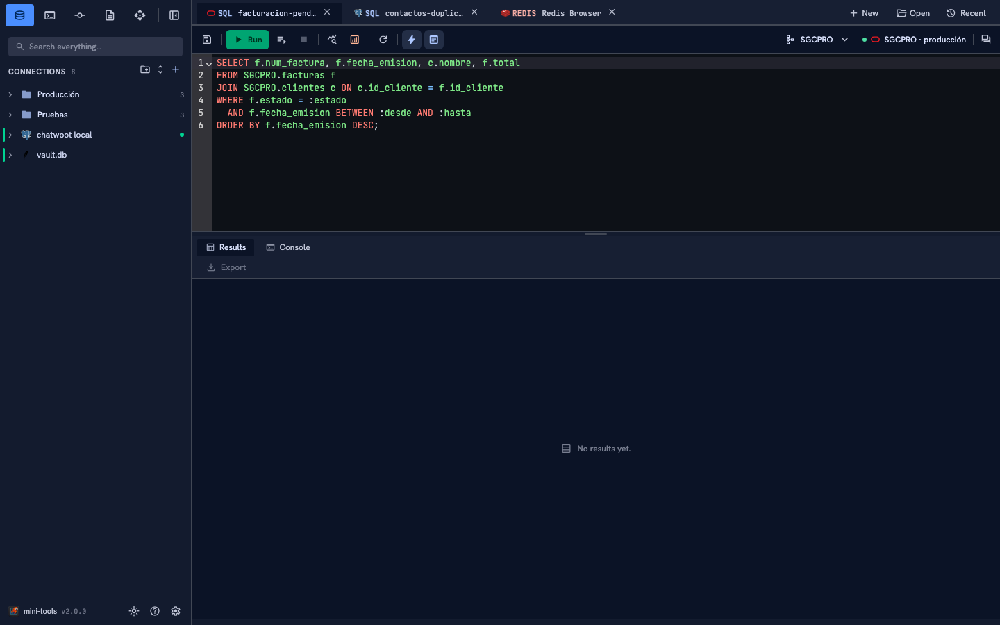
One module at a time in the sidebar, and the one you're using gets the full height.
Why it exists
Real work crosses over all the time: you look at a log on the server, run a query, test the endpoint
that uses it, find the commit that broke it and write it down for whoever comes next. mini-tools puts
all of that in a single window, with a single encrypted place where the credentials live.
One binary, zero install
Go + Wails: it uses the system WebView. No Electron, no JVM, no Node running in the background.
Your credentials, yours
Every DSN, SSH password and private key is encrypted with AES-256-GCM. The key is derived from your master password with Argon2id and is never stored anywhere.
No telemetry, no account
No sign-up, no app server, nothing is sent. The only thing that goes out to the internet is what you point it at: your database, your server, your API.
Your agents, inside
Claude Code, Codex, OpenCode and Antigravity with their full terminal or a native chat, with context from the module you're in.
Production warns you
Mark a connection as production and every destructive statement asks for explicit confirmation before it runs.
English and Spanish
Interface, error messages and documentation. Tooltips explain the consequence instead of repeating the button's name.
mini-tools is free, open source and has no telemetry, and it will stay that way. If it saves you work and you want it to keep
growing, you can support it with a one-off contribution on Buy Me a Coffee or a monthly subscription on
Patreon. Both are also one click away in the app, at the bottom of Settings.
Choose your master password when it starts. It's the one that encrypts everything else.
Windows
Download the portable .exe from Releases. There's no installer: it runs wherever you put it.
SmartScreen may warn "Windows protected your PC" for the same reason as Gatekeeper: More info → Run anyway.
Choose your master password when it starts.
Important
The master password is not stored
anywhere: if you lose it, the vault is lost and there's no recovery. That's exactly what makes a
stolen backup useless. You can ask it to remember the password on that machine, and then it's kept by the
operating system's keychain, not by the app.
Build from source
If you'd rather build it yourself, you need Go 1.26+, Node 20+, pnpm and the Wails v2 CLI:
git clone https://github.com/rafael180496/mini-tools
cd mini-tools
# frontend dependencies
cd frontend && pnpm install && cd ..
# development, with hot reload
wails dev
# production binary
wails build
Note
No CGO. Every driver is pure Go, so it
builds and ships as a single executable with no system dependencies.
pnpm comes from corepack
Don't install it with
npm install -g pnpm. Global npm packages are per Node version, so the next
nvm install leaves it behind and the build dies with
exec: "pnpm": executable file not found in $PATH — an error thrown by wails, because it's the
one running pnpm install, and it tells you neither the cause nor the fix. The scripts in
scripts/ enable it on their own; by hand it's corepack enable pnpm.
This help, from the app
The ? button at the bottom of the sidebar —and the Documentation link at the
bottom of Settings— open this page in your browser, so you don't need to remember the address.
Your first connection
You don't need to fill the form field by field: paste the string you already have and the
app works out the engine and the rest.
Create the connection
Sidebar → Connections module → +.
Choose the engine, or better: paste the connection string you already have in a .env and the form fills itself in, detecting the engine.
Test connection if you want, but it isn't required: you can save a connection to a server that's down right now.
Mark it as production if it is. From then on every UPDATE, DELETE or DROP asks for confirmation.
Double-click the connection and an editor tab bound to it opens. ⌘↵ / Ctrl+↵ runs.
Mark production
The environment marker isn't decorative: it paints the connection in the tree, in the editor bar and in
the footer of its SSH terminal, with its name and color —red with a glow for production—,
and it turns on the Production Guard: an UPDATE or DELETE without
a WHERE won't run without a confirmation that says how many rows it will touch, and in the
terminal of a server marked as production, destructive commands ask for confirmation too.
Organize with folders
Connections are grouped in folders (Production, Testing, a client, a project). Folders are
just organization: they never change which connection is active or which one a query runs
against.
The window: modules and tabs
A sidebar with six modules —one at a time—, tabs in the center and a panel below.
Everything you drag or collapse is remembered between sessions.
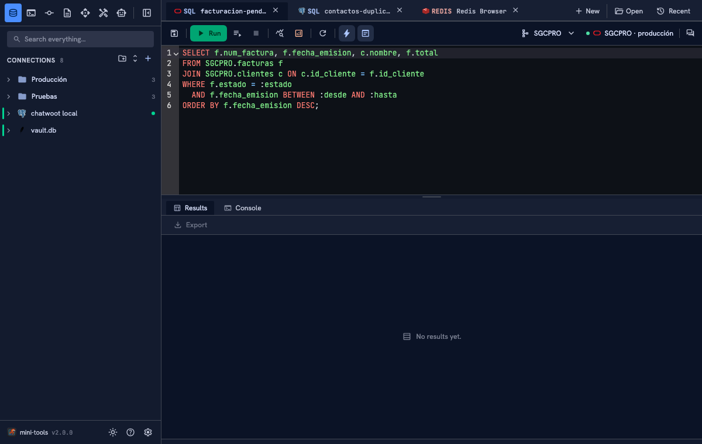
The counters over each icon tell you which module holds what you're looking for.
The six modules
Module
What it's for
Connections
Databases: explore the schema and run queries
SSH
Remote servers: open a terminal or transfer files
Git
Repositories: see changes, branches and work with the agents
Notes
Your encrypted knowledge base: runbooks and notes
HTTP
Request collections: test and save endpoints
Utilities
System tools, each in its own tab: Port Killer (who holds a port), Activity Monitor (live processes, CPU and memory), Docker (containers, images, volumes, networks, logs and Compose) and the AI Chat (every conversation in one place, with search; the ones working in the background —Open and Recent— hang from its row)
You see one at a time, so the one you're using gets the full height instead of the
strip the others used to leave it when stacked.
One search for all of them
The box at the top filters all the modules at once, and each icon shows how many
matches it has. That's what saves you from deciding up front where to look for something you
only remember by name.
Tabs and panels
Tabs are labeled by type (SQL, REDIS, HTTP, note, terminal, repository, utility) and each SQL tab is bound to a connection from its own selector — never as a side effect of browsing the sidebar. Drag them to reorder, and close them with the ✕ or with a middle-click, like in VS Code.
The bottom panel has Results and Console (plus DBMS_OUTPUT and the execution plan when there's something to show); drag it to change its height.
The editor bar is a single row of icons: on the left what you press (save, run, explain, refresh), on the right what the tab runs against (schema and connection) and the chat. What each button does —and its shortcut— is in its tooltip.
Drag the sidebar to change its width, or hide it entirely, leaving a column of icons. Width, open module and editor height are saved between sessions.
The five sidebar trees (connections, SSH, Git, notes and HTTP) all behave the same: an icon per type —folder, database engine, server, repository, branch, note, HTTP method—, guide lines per level and a button in the header to collapse or expand everything. Right-clicking any row, or the empty space, opens its menu with every action (rename, duplicate, move to another folder, copy, delete…); the ⋯ button that appears on hover opens the same one. It also works from the keyboard: arrows, Enter and Esc.
Explore the schema
Six engines with the same tree, the same editor and the same grid: Oracle, PostgreSQL,
SQLite, SQL Server, Redis and MongoDB.
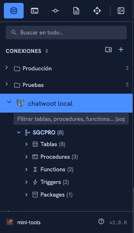
The tree also searches inside procedures, functions, triggers and packages — not just tables.
What the tree shows
Connection → schema → categories. Tables go in their own collapsible category, always sorted
alphabetically (tested against a real schema of 342 tables); next to them are Procedures, Functions,
Triggers and Packages, each with its counter.
Group by prefix (the folder icon on the Tables row, or its right-click menu) folds the
tables that share a prefix —up to the first _, - or $— into one row:
TMP_*, AUD_*, BATCH_*. Inside a group the prefix is left out of each name; a
prefix with a single table stays on its own. The choice is remembered on this machine.
Search inside the schema
The filter at the top of the tree isn't limited to table names: it also finds procedures, functions,
triggers and packages. It's the difference between searching for FACTURA and finding the
table, or also finding the PR_FACT_ACTUALIZAR that is what you were really after.
View and export the DDL
Clicking a procedure, function, trigger or package opens its DDL in a viewer.
From the tree itself you can export the DDL of one object or of an entire schema.
Double-clicking a table inserts a query against it into the active editor.
The viewer shows the DDL exactly as the engine returns it, with the same highlighting as the editor.
Inside: Ctrl+F searches, Wrap toggles between wrapping long lines at the
panel width or letting them run with horizontal scroll, Copy puts it on the clipboard and
Export saves it as .sql. At the bottom it says how many lines and how big it
is, so you know whether what you see is all of it. Close it with Esc or by clicking
outside.
Tip
If the schema has hundreds of objects, restrict which
schemas the connection scans from its settings dialog: the full scan of a large catalog is the only thing
in the whole module that genuinely takes time.
Write and run queries
Autocomplete that understands where the cursor is, 46 expansion shortcuts, and execution
that streams statement by statement.
Context-aware autocomplete
Autocomplete understands where the cursor is: it suggests tables after FROM,
columns limited to the tables the query actually references after SELECT or
WHERE, and resolves aliases when you type a dot.
SELECT c.▮-- columns of CLIENTES, because c is its alias
FROM SGCPRO.CLIENTES c
JOIN ▮-- suggests the complete JOIN from the foreign key
Ctrl+Space forces it where it doesn't open on its own, and Tab accepts the grey suggestion.
Inside a PL/SQL block it reads the block too: each statement of the body has its own scope
(a WHERE sees only its own statement's tables), the variables of the DECLARE and the
parameters of the procedure you're writing are suggested as values, and inside a call to a stored procedure
it offers the parameters you haven't passed yet, inserted as p_name => . After
SCHEMA. it lists the schema's tables, procedures, functions and packages.
On Oracle, the popup also lists synonyms —public or the owner's— that point at a table or view
of the scanned schemas, with a link icon next to the table icon. The detail on the right says where each
one comes from: SGCPRO · 12 col for a table, PUBLIC → SGCPRO.TB_CLIENTES for a synonym.
A synonym resolves to the columns of its target, so FROM CLIENTES c followed by c. works
even when CLIENTES is only a synonym. One spelled exactly like a table is not listed twice.
With the popup open, Enterinserts the suggestion and Tabreplaces the rest of the word to the right of the cursor as well —the footer of the popup reminds
you of both. Without text to the right they do the same.
Keywords follow the case you already write in: in a script written as select … from …
where the popup offers where, not WHERE. With nothing written yet, the case of
what you type decides.
Format and go to the definition
Format SQL (⌥⌘L / Ctrl+Alt+L, also Shift+Alt+F, or the
format icon in the bar) lays out the selection —or the whole file, with nothing selected— one clause per
line: the SELECT list aligned, each JOIN on its own line, AND/OR
indented under the WHERE and subqueries indented inside their parentheses. It only changes whitespace
and keyword case, so the statement runs exactly as before; PL/SQL blocks, DDL and SQL*Plus commands are
left as they are. One ⌘Z undoes it.
⌘+click (Ctrl+click on Windows and Linux) on a table, an alias, a
procedure, a function or a package opens its DDL. While you hold the key, whatever can be opened is underlined.
⌘F / Ctrl+F opens find and replace at the top of the editor; the three toggles are
match case, regular expression and whole word, and every button says its shortcut in its tooltip.
Expansion shortcuts
It ships 46 common shortcuts (up to 64 depending on the engine). Type the three letters
and Enter:
Shortcut
What it inserts
sel
SELECT … FROM … WHERE … with placeholders to tab between
in · bet · like
The conditions you mistype exactly when you need them
ljoin · sjoin
LEFT JOIN, and the self-join of a table with itself for hierarchies
nulls · minmax
Profile a column you don't know: how many nulls, minimum, maximum and distinct values
cols · size · act
Catalog, table sizes and running queries — in your engine's syntax
tx
A transaction with each engine's error handling
Run
⌘↵ / Ctrl+↵ runs the selection, or the statement under the cursor if nothing is selected.
Block (Ctrl+Shift+↵) runs a complete PL/SQL block, with DBMS_OUTPUT captured.
Results arrive live, statement by statement, and can be cancelled on the fly. Each statement run from the editor leaves a small mark at the end of
its line —412 ms · 500 rows, error or cancelled— with the time and the detail in its
tooltip; running the line again replaces it — even while the connection is still opening. If the database doesn't confirm the cancellation within a few seconds, the result is marked cancelled anyway, with a note that the statement may still be finishing on the server. A multi-statement script opens one result per statement, in tabs you can close one by one or all at once.
Running doesn't block anything. While a long query runs you can run another: in another tab, against another connection, or in the same tab — the new run appends its "Result N" after the previous ones instead of overwriting them. Results, console and cancellation belong to the tab that asked for them, and the tab that's working shows a spinning ring on its label, so you can see it from any other.
Auto-commit is the lightning icon in the bar, lit when it's on: one click switches to manual transactions, and then Commit and Rollback appear next to the "Transaction open" notice. There's never any doubt about whether a change was committed — and no greyed-out buttons waiting for the 1% of the time they're useful.
Where everything is
A single bar above the editor. On the
left what you press —save, run, block, cancel, Explain, Explain Analyze, refresh— plus the auto-commit and
DBMS_OUTPUT toggles; on the right the schema, the connection and the chat. They're icons: the
name, the shortcut and the why of each one are in its tooltip, and the only one that keeps its label is
Run. In Settings → Appearance → Action bar you choose whether Run shows its
name ("Normal"), whether nothing does ("Compact") or whether the bar isn't shown at all ("Hidden"; the
shortcuts keep working). The outcome of the last run lives at the bottom of the results panel, right next
to the grid it describes.
The execution console
Its own tab next to Results, DataGrip style: it logs each statement of the script with its full text
and a timestamped result line — N rows fetched in 412ms, completed in 1h 9m 26s 452ms, or
the full error, untrimmed. The duration is written in hours, minutes and seconds as soon as it passes one
second; the exact figure in milliseconds stays in the tooltip. It activates by itself for any script with
more than one statement, and it's a running log of the session: what you ran half an hour
ago is still there until you press "Clear console".
The SQL is shown with the same colors as the editor (keywords, types, literals, comments
and bind parameters), and failures are visible without reading: a red bar along the side of the entry, the
message in its own block with the engine code —ORA-01843, PLS-00201— highlighted,
and the count of failed entries in the header.
It's the only record
The console replaced the query history
that lived in a separate tab until 2.4.0: it said the same thing with less context and on another screen.
The app no longer saves the statements you run to disk, and on update it deletes the ones it had
saved before — the console lives in memory and starts empty every session.
Production Guard
On a connection marked as production, an
UPDATE or DELETE without a WHERE won't run without a confirmation that
says how many rows it will touch.
The only thing that waits
With an open
transaction (auto-commit off), runs on that connection happen one at a time. It isn't an interface
limitation: with auto-commit off the engine reserves a single connection to that database, so two
runs wouldn't go in parallel — they'd be interleaved in the same session and inside the same transaction,
where a Commit from either side commits the other's work. The status bar says so and suggests the way out:
wait, or Commit/Rollback.
Pagination and a shared connection
The engine keeps
one paused cursor per connection. If a result was left with "Load more" and you run another
query on that same connection, that cursor is closed: the result switches to saying "pagination
closed" instead of offering a button that no longer works. To keep reading, run the query again — or use
another connection for whatever you were going to run in the meantime.
Closing a tab that's running cancels its query and takes its console and results with
it: it's the only action that leaves them with nowhere to be shown.
Parameters
Type :since and the app asks for the value before running. It never goes into
the SQL text: it travels separately and is bound as a driver argument.
How to use them
SELECT * FROM INVOICES
WHERE ISSUE_DATE BETWEEN :since AND :until
AND STATUS = :status
When you run it, a form appears with one field per parameter, with its type (text, number, boolean or
NULL). The values are remembered per tab, so re-running the same query with the
same values is pressing ⌘↵ twice.
What it recognizes, and what it doesn't
It recognizes :name in all four SQL engines, $1 in PostgreSQL and ?
in SQLite/SQL Server. And —more importantly— it recognizes what is not a parameter: PL/SQL's
:=, the :: of a cast, a trigger's :NEW/:OLD, and anything
inside a literal, a comment or a CREATE PROCEDURE.
Why it matters
A parameter that gets concatenated is an
injection waiting for someone to paste an apostrophe. Here the SQL text that travels to the engine is always
the one you wrote, with the values as separate arguments.
Edit rows from the grid
Double-click a cell and the app writes the UPDATE with its WHERE
on the primary key. The change stays pending until you send it.
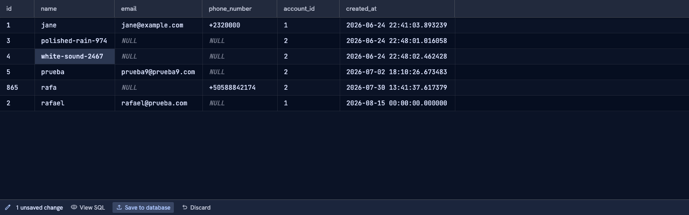
The bottom bar says how many unsaved changes there are, and lets you see the SQL before sending it.
How it works
Double-click the cell and fix the value. The editor depends on the type: a date and time picker for a timestamp, a dropdown for a boolean, a numeric field for a number — with NULL as a separate button, because "no value" and "empty text" aren't the same thing.
The change stays pending and marked. That delay is on purpose: it lets you see the exact SQL first, change your mind, and send several changes together.
View SQL shows a preview of what's about to run.
⌘↵ / Ctrl+↵ sends them. Discard throws them away.
SQL expressions. The fx button in the cell editor switches from a value to an
expression the database evaluates on save — SYSDATE, NOW(), SEQ.NEXTVAL,
price * 1.12. It goes into the UPDATE as written, in parentheses, instead of as a
parameter; the grid shows the expression marked fx, not its result. An expression can't contain
;, comments or unbalanced parentheses: those would change which statement runs, not which value is
written.
The rule that governs the feature
Never write a row that can't be identified beyond any doubt, because a
WHERE that matches too much can't be undone with Ctrl+Z. That's why editing is only offered
when:
the query comes from one table —no JOIN, no GROUP BY, no subqueries—;
that table has a primary key;
and the complete key is in the result.
When it can't, the grid tells you why instead of hiding the button.
The transaction
Each UPDATE runs in a transaction and has to affect exactly one row: if it
affects any other number, the whole batch is rolled back and it explains why —two rows with the same key
means the key wasn't unique, and a broken promise there is worth more than the change. Values travel as
parameters, never concatenated.
It stays in the console, with the values
Saving leaves in that tab's Console the exact statements that ran, with their
duration and how many rows they touched, marked as "Grid edit" to tell them apart from what
you wrote yourself. There's a single entry per save, because the whole batch is one transaction: either all
of them went in or none did. If the batch was rolled back, the entry says so with the engine's error.
Under each statement go its values: the UPDATEs travel parameterized, so on
their own they'd say which column was touched but not with what. Each bind comes with its number, its column
and its value, and at the end the previous value — which isn't in any statement and is the
only thing that lets you undo it by hand.
UPDATE SGCPRO.FUECICLO SET LECT_ACT = :1 WHERE NIS_RAD = :2 AND SEC_NIS = :3
:1 LECT_ACT = '1543' :2 NIS_RAD = '88213' :3 SEC_NIS = '1' (was '1200')
Why it matters
It's the easiest write to make without noticing
—a double-click on a cell— and it was the only one in the application that left no trace. Now "what did I
do to this table today" is answered by looking at the console, just like any other run.
Copy and export results
Select rows and they come out as CSV, INSERT or UPDATE ready to
paste into another environment — with the real table and the dates converted for the target engine.
Filter, statistics and record view
The bar above the grid has three tools that don't query the database again — they work on the rows
already loaded:
Filter rows (⌘F / Ctrl+F with the grid focused): keeps the rows that
contain the text in any column, highlights it and says N of M. Selection and pending edits survive
clearing it. To filter the full result, add a WHERE.
Statistics: for the chosen column, rows, values, nulls and distinct values; if it's numeric,
also sum, average, minimum and maximum, and if it's text, the minimum and maximum length. Computed over the
selected rows or, with none selected, over the visible ones. Click a figure to copy it.
Record: one row at a time, each column on its own line with the full value — the way to read a
sixty-column table or a long text. Arrows (or ←/→) move between rows; it's read-only.
Column widths
Each column starts as wide as what it holds: a seven-digit id column is narrow and a
description column fits entirely, instead of all of them being the same width and half the table ending up
cut off with ….
The line between two columns is also the handle: drag it to change the width —it
highlights on hover— and double-click it to fit the content. Whatever you move by hand is
kept when you re-run the query or fetch more rows; it goes back to automatic width when the result brings
different columns.
Select rows
Like in any file explorer, and with the same gestures as the SFTP panel: a single click selects that row,
Ctrl/Cmd+click adds or removes one without losing the rest,
Shift+click selects the range from the last row you touched, and
Ctrl/Cmd+Shift+click adds that range to what was already selected.
Ctrl/Cmd+A selects every loaded row and Esc clears; a single
click on the only selected row also deselects it.
Rows, not letters
With a modifier held down the grid selects
rows: it doesn't let the browser extend its text selection, which is what used to paint the
letters blue and hide the highlight. Without modifiers you can still select text by dragging inside a cell,
to copy a single value by hand.
Copy rows as SQL you can run
The table and schema are the real ones: the app reads them from where the query came
from, not from the connection's name. And dates are converted using each column's real type,
as declared by the driver for that result:
TO_DATE(…), or TO_TIMESTAMP(…) if the column has fractional seconds (which TO_DATE would silently truncate)
PostgreSQL
TIMESTAMP '…' / DATE '…'
SQL Server
CAST(… AS datetime2) / CAST(… AS date)
SQLite
The text literal: it has no date type, it stores the ISO string as is
Without this the date traveled as ISO text and Oracle rejected it with ORA-01861 unless the
NLS_DATE_FORMAT of whoever ran it happened to match — which is exactly what a generated statement
can't take for granted.
Note
When the query does not come from a single
table —a JOIN, a view, a subquery— the name is left as tabla on purpose: making it
obvious that it needs filling in is better than a plausible name that doesn't exist. If it comes from a single
table the catalog doesn't know —a synonym, a table on the other side of a DB
link, or a connection whose catalog hasn't been read yet— the name comes out anyway, written exactly
as you wrote it in the SELECT; what you can't do there is edit the grid, because without a catalog
there's no primary key to guarantee the UPDATE touches a single row.
Copy as UPDATE
You get one UPDATE per row, with a WHERE that matches every
column as a conservative default, and a comment on top asking you to adjust it to the real primary key before
running it.
Export to a file
Format
What it exports
CSV · JSON · XLSX
The query result, with a native dialog to choose where
DDL
Of a single object or a whole schema, from the tree
Connection settings
Without passwords: they're redacted before the file is written
Execution plans and history
EXPLAIN on whatever you're looking at, and a per-connection log of everything you ran.
EXPLAIN and EXPLAIN ANALYZE
They run on the selection, or on the statement under the cursor — not on the whole file.
The plan is drawn as a visual tree, with full table scans highlighted, which is what you came
looking for.
Careful
EXPLAIN ANALYZE runs the query.
The button says so explicitly, because on a write statement the difference between EXPLAIN and EXPLAIN ANALYZE
is that one of them executes it.
Linter
It flags SELECT * as a visual hint —it doesn't block anything— and asks for confirmation
before an UPDATE or DELETE without a WHERE.
Redis and MongoDB
They aren't SQL databases, so they have no query editor or table grid: they have their own
explorer, with the same tree and the same vault.
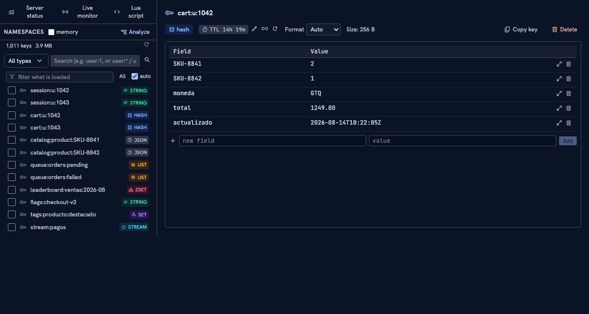
Redis Browser: key list with type and TTL, and an editable detail on the side.
Redis
A key tree in the sidebar under the expanded connection, and a full-tab Redis Browser for serious work.
Inline editing of strings, hashes, lists, sets, sorted sets and JSON — preserving the TTL, which is the classic mistake when editing a key by hand.
A command console with autocomplete for that connection's keys.
MongoDB
An explorer of databases and collections, with the collection list cached per connection.
Documents are shown as a table —with keys as columns— or as JSON, and edited inline.
A collection's document count is requested separately: on a large collection counting is expensive and there's no reason for it to delay the list.
Collections and requests
Postman-style collections, saved in the same encrypted vault as your connections — not in a
config file or in anybody's cloud.
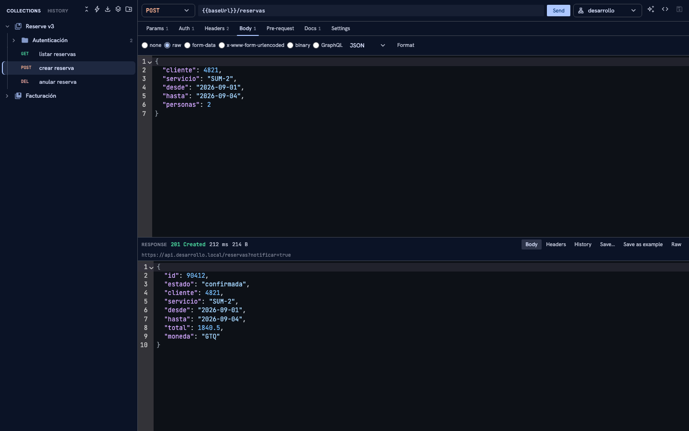
Collection tree, request and response on the same screen.
Collections, folders and requests
The tree is collection → folders → requests, and each request is labeled with its method. Reorder by
dragging, and nest folders as deep as you like.
Quick requests
For testing an endpoint without creating or naming any collection. If it turned out to be useful,
Save to… moves it into the collection you choose. All quick requests share a single chat
thread with the agent, which is right for one-off tests that aren't "about" anything in particular.
Paste a "Copy as cURL"
A collection's menu → Paste a cURL command… and you get a request ready to edit, with
method, URL, headers and body. It's the fastest way to bring over something that already works in the
browser.
With a request already open there's a second path, the quick-request one: ✦ → Write the
request…, paste the command there and Import as is. It's translated with the same
parser, without going through the agent: instant, no quota spent and nobody "improving" the
command — a curl copied from the browser has to be reproduced exactly or it stops reproducing the
problem you're looking at. The button next to it, Ask for a change, is for when you also want
to modify it: "this same cURL but against staging and without the trace header".
Generate code
Any request can be turned into cURL, raw HTTP, Go, JavaScript, Python, Java, C#, PHP, Ruby or PowerShell,
with variables resolved and secrets masked by default.
Import and export Postman
Format v2.1, round-trip: what goes in comes back out intact, even what this version doesn't
run yet.
Import
The Import (cURL, Postman) button at the top of the panel opens a single dialog for everything: you paste something or drop files, and
the application recognizes on its own what it is and tells you before writing anything.
Paste: a cURL command, a request written as plain text
(POST /v1/orders HTTP/1.1 with its headers and body), a bare URL, or straight up the JSON of
a collection.
Drop files or a folder: Postman collections (v2.0 and v2.1), environments, or the full
Postman data dump, which brings collections and environments together. A folder is walked entirely;
anything that isn't a collection is skipped quietly.
A collection comes in complete: requests, folders, variables, authentication, descriptions and scripts.
Whatever this version doesn't run yet is saved anyway, so it comes back out intact on
export.
A single request —a cURL, a URL, a plain-text request— is saved in the collection you
pick and opens in its own tab, ready to send.
When it's done it tells you what came in, one by one, and with what caveats — at
import time, not when the request fails three days later.
Also in the URL bar
Pasting a "Copy as
cURL" straight into a request's URL bar imports it whole —method, headers and body— instead of
leaving a hundred characters of shell inside the field. Anything that doesn't start with curl is
pasted as text, as always.
What isn't supported
OpenAPI/Swagger, HAR and Insomnia can't be
imported. A file that isn't recognized tells you why: a collection exported in Postman's old
format (v1), for example, warns that it has to be re-exported as v2.1.
Export
The collection comes out in the same v2.1 format, so it can be opened again in Postman or newman.
Secrets don't travel
A variable marked as secret comes out
declared and empty, and the OAuth 2.0 token doesn't come out at all. A collection file
ends up in a chat and in a repository; whoever receives it has to put in their own credentials.
History and favorites
Everything you sent, newest first; and the two collections you're working with today, above
the other twenty.
Request history
The module's sidebar has two sections: Collections and History. The
history gathers what was sent from anywhere in the application —saved or not— grouped by day, with the method,
the status and how long it took. The search box at the top filters it by URL or by request name.
Clicking an entry of a saved request opens that request.
Clicking a quick request opens a new tab with its method and URL.
The row's ✕ deletes that entry; the icon in the header clears the whole history.
It doesn't store headers or body
And that's on purpose: a
history with the Authorization of every send is a token file nobody asked to have. That's why a
quick request can only be reopened with its method and URL — the rest isn't stored anywhere.
Favorite collections
A collection's star —on the row, on hover, or in its context menu— pins it to the top of the list. Among
several favorites, the one you starred last wins, which is the one you're using now; there's
no need to sort them by hand or undo that order when the project changes.
Variables and environments
{{like_this}} placeholders in the URL, headers, body and authentication, with
three levels of precedence.
How to use them
Precedence is dynamic → environment → collection, and one variable can use another:
protocol = https
host = api.example.com
baseUrl = {{protocol}}://{{host}} -- resolved as a chain
GET {{baseUrl}}/customers/:id?tenant={{tenant}}
Anything no level defines is flagged before sending, instead of going out with the braces
inside and failing on the other end.
Environments
An environment is a set of variables (development, staging, production). Switching environment changes what
the same request runs against, without touching it. Each environment also has its own cookie
jar: one request's login is valid for the following ones, and testing production and development at
the same time doesn't mix the sessions.
Secret variables
Marking a variable as secret does three things: it's encrypted in the vault, it's masked in the interface
and in the history, and it doesn't go out in the export or in generated code.
Authentication
Request → folder → collection, just like Postman: whatever the request doesn't define it
inherits from above.
Supported types
Type
Detail
Basic
Username and password
Bearer
Token in the Authorization header
API Key
In a header or in the query, your choice
JWT
HS256 / HS384 / HS512, signed on the spot
Digest
RFC 7616
AWS Signature v4
With region and service
OAuth 2.0
Including the native app flow (RFC 8252)
OAuth 2.0 in a desktop app
The flow uses the system browser —not an embedded WebView, which is where the user can't
check the address bar—, captures the redirect on a loopback port and uses PKCE S256
always, not just when the provider requires it.
Note
The loopback server only lives while the flow lasts. On
Windows it may trigger the Firewall prompt the first time.
Signing without scripts
HMAC signatures are declared instead of programmed: there's no JavaScript engine
inside the app.
Why there are no scripts
Embedding a script engine cost +19.8 MB against a ceiling of 80 for the whole binary.
What people actually wrote in those scripts was almost always the same thing: a timestamp, an HMAC and a
base64. That can be declared.
Declare the signature
Each computed variable has an operation, an input (with placeholders inside) and optionally a key. They
chain into each other:
HMAC, SHA, base64 and text are available. Whatever comes out of a computed variable is marked as
secret, so it doesn't appear in the history or in the export.
Run the whole collection
Every request in order, one at a time, with live progress and a pass/fail summary.
In order, one at a time
A suite is almost always a sequence: login, then whatever uses the session, then whatever uses the id
returned by the previous one. Running them in parallel would break that. There's an optional pause between
requests for rate-limited APIs.
What "passed" means
Important
That the request went out and the
server answered with a code below 400. Test scripts are saved and exported but
are not run here — Postman or newman run them. Saying "3 tests passed" about scripts nobody
ran would be a lie formatted as a report.
Collection documentation
Documentation… → Publish as note generates a document in the Notes module with the
requests, their parameters and the examples you've saved. Regenerating it doesn't overwrite
what you edited by hand: the note is looked up by its id, not its title, so you can rename it.
Write and link notes
Runbooks, procedures and incident notes live inside the vault, encrypted with the same master
password as your connections.
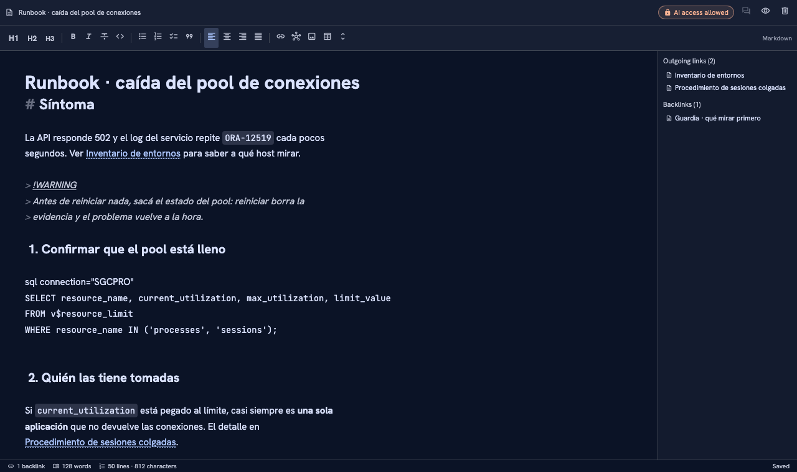
The Markdown looks formatted as you type; the markers only appear on the cursor's line.
Markdown you see as you type
Headings, bold, lists, tables, quotes and code blocks are formatted live. The Markdown markers appear
only on the line where the cursor is, so the document reads like a document and edits like
text.
Links between notes
Type [[Title of the other note]] and you get a link. The note doesn't need to exist yet: the
link creates it when you follow it. Links are resolved by title hash, so renaming a note
doesn't break the ones pointing to it.
Images
Paste a screenshot with ⌘V and it's embedded, encrypted just like the text —
not in a folder on disk next to the vault.
The lock is against the agents, not against you
Marking a note
as private hides it completely from the chat and from the MCP server —the filter is in the
query, not in an if— while you still see it and it still appears in your graph.
Runnable SQL blocks
A runbook that runs: an SQL block with a declared connection comes with its own
Run button.
How to write one
A code block with the sql language and the connection attribute:
## Stuck sessions
If the portal doesn't respond, first check who is blocking:
```sql connection="SGCPRO"
SELECT s.sid, s.serial#, s.username, s.status, s.machine
FROM v$session s
WHERE s.status = 'ACTIVE'
ORDER BY s.logon_time DESC;
```
If a session older than an hour shows up, report it in [[On-call · who to call]].
What happens when it runs
It runs against your real connection, with the same Production Guard as the editor.
The result isn't saved in the note: it's a query, not documentation. The note describes the procedure; the data belongs to this moment.
If the declared connection no longer exists, the block says so instead of running against another one.
Tip
This is what turns a runbook into something the next
on-call person uses instead of reading and retyping. Put in the exact query, not a description of
the query.
Folders, graph and search
Three ways to find something again: where you saved it, what you linked it to, or what it
said.
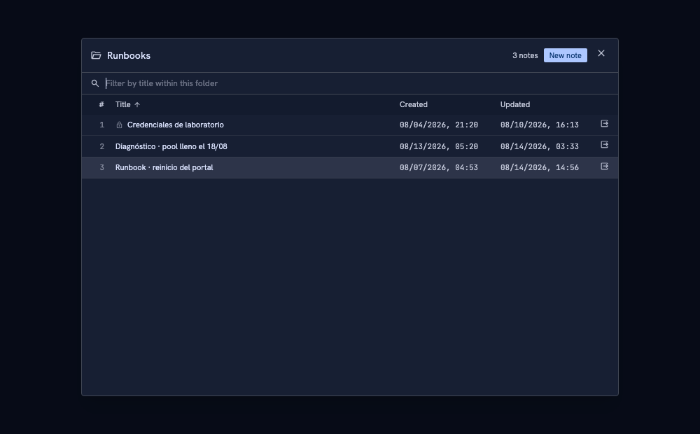
Double-click a folder (or "Open as table" in its menu) and it opens as a table; a single click collapses it.
Folders
Right-clicking a note, a folder or the empty space opens its menu: rename, duplicate (with its images and its privacy), move to another folder, pin to top, merge with another note (if either is private, so is the result), export as Markdown with the images included, copy the [[…]] link or its location, make it private or delete it. Each row's ⋯ button opens the same menu.
Each folder creates notes and subfolders already inside it from its menu, and the header button collapses or expands all.
Table view per folder: creation date, last modified date, sortable and with a search box that filters only there.
The list stays still. Without a search the order is alphabetical and accent-insensitive —"Ámbito" sits next to "ambito"—, so a note is always in the same place. When you are searching, relevance wins.
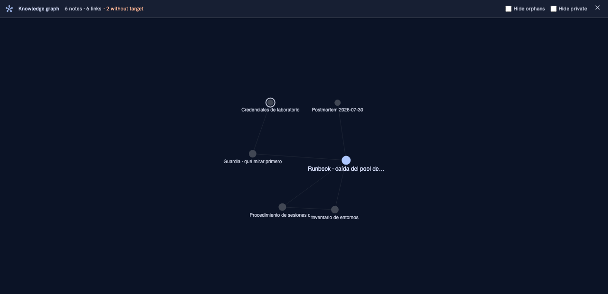
The graph builds itself from the [[links]] you've already written.
Graph and backlinks
The graph draws everything you've linked. Backlinks —the links
coming into the note you're looking at— are the ones you don't remember adding, and they tend to be
the useful ones.
Search
It finds Diagnóstico when you type diagnostico: it's accent- and case-insensitive.
It requires all the words, in any order.
It understands tag:, enlaza: and privado: as filters.
The repository: graph and diff
A Sublime Merge–style client on top of your system's git — so your credential
helpers, your ssh-agent and your hooks keep working exactly the same.
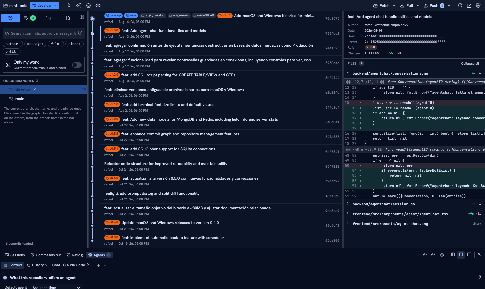
Pick a commit and its detail appears on the right, with the files and the diff.
Branches and tags
Branches, remotes and tags are in the sidebar tree (folders by prefix, pinning, filter, right-click menus).
In the tab, the branch chip in the bar is the quick switcher — see Toolbar and work panel.
Operations
Push, pull and fetch with all their variants (--force-with-lease, --ff-only, --rebase --autostash, --prune…). If the branch isn't published, any of them offers to set the upstream without losing the flags you already chose.
Pull summary: after bringing in changes you see in one line how many files changed, lines added and removed, and the commit range (click to jump to the graph). The file list expands on demand, can be filtered, and each file opens with a click.
Rebase of both kinds: interactive to reorder and squash, and of one branch onto another from its menu. Both can be aborted.
Stage by hunk, unified or side-by-side diff, stashes, worktrees and a three-way conflict resolver.
Submodules with the state that matters: uninitialized, moved relative to the commit the parent pins, or in conflict.
Native Git Flow, with nothing to install: it writes the same config keys as the command, and finds out whether your production branch is main or master instead of assuming.
The command log
Every action records the exact command the app ran underneath, with its output and how
long it took. It's useful for learning what the button does, and for pasting the command into a ticket.
Toolbar and work panel
One bar on top for where you are and how you sync, and a work panel on the left
with four tabs — History, Changes, Stash and Files. What each tab shows (the graph, the diff, the stash patch, the
editor) opens in the main area.
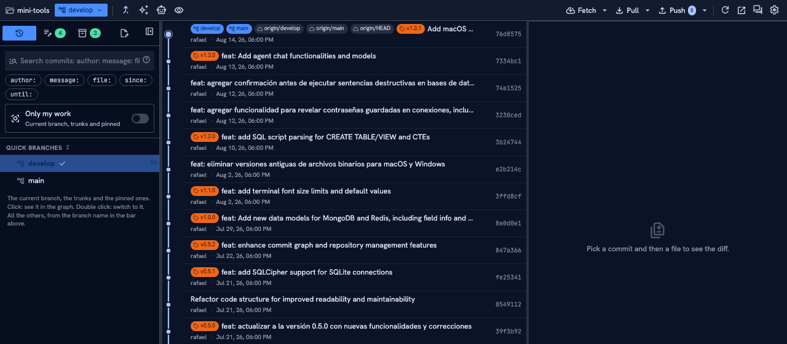
The History tab: search and filters on the left, the graph in the main area.
The toolbar
The branch chip shows where you are. Click it for the quick switcher: one box that filters local branches, remote branches and tags at once. Enter switches to the first match, the target icon shows the branch tip in the graph, the star pins it and right-click opens the full menu (merge, rebase, rename, upstream, delete). Branches, remotes and tags are also in the sidebar tree.
Fetch, Pull and Push are split buttons: the left part does the usual action, the arrow opens the variants (--force-with-lease, --rebase, fetch from one remote…). Pull and Push carry a counter with the commits behind / ahead.
The rest are icons with a tooltip: create the pull request and have the agent describe it, agent mode, the View menu, refresh, Open in… (your editor, the file manager, a terminal), the agents panel and the repository settings.
In a narrow tab, the bar folds what does not fit into a ⋯ menu.
The work panel
History: commit search (author:, message:, file:, since:, until: — the chips add the prefix for you) and Only my work, which shows just the current branch, the trunks and the pinned ones. Under them, the quick branches: click to see one in the graph, double-click to switch.
Changes: see below. Stash: the list, with a preview of the selected stash in the main area. Files: the editor's file tree.
It lives in the app's sidebar, under the repository list: opening a repository's tab switches the sidebar to Git and the panel shows up there, so the tab keeps its whole width for the graph, the diff and the chat. If you collapse the sidebar or pick another module, the panel goes back inside the tab. Click its header (the repository name, with a chevron) to fold it down to that single row and give the whole height back to the repository list, and drag the divider between the two to split the height as you like — double-click it to restore the default. On a narrow sidebar the four tabs show only their icons; hover one for its name.
Prefer it inside the tab? View → Keep the work panel inside the tab (and back with Move the work panel to the sidebar). Inside the tab, drag its edge to resize it — the width is remembered per repository, like the tab you were on — and the button on the right of the tabs folds it into an icon bar.
The bottom panel: Chat, Terminal, Context, Log
Chat: the open conversations with agents, + to start one and History (on the right) for every past conversation. With none open, the history shows up, which is also where you start a new one. The chat's own controls — Validate with another, search and restart, plus the model — sit on that same row, to the right of the conversations, so there is no extra bar above the messages.
Terminal: shells and agents in their full terminal. The font size and palette buttons only show on this tab.
Context: what the repository offers an agent — skills, subagents, commands, instruction files and MCP. Its counter is that, not the number of chats.
Log: the git commands the app ran, with their output, and the reflog.
In the chat, the mode, Brain, effort, attach and model controls sit at the foot of the message box; what the mode allows and how many tokens the conversation spent go on a faint line underneath.
Resolving conflicts
When a merge, pull, rebase or cherry-pick stops on conflicts, the resolver opens by itself with a notice of what happened (the raw error stays in Log). Three steps at the top tell you where you are: choose what to keep, mark the file resolved, continue the operation.
Click the side you want to keep — the whole pane is the button — and the view jumps to the next undecided block. Clicking the other side as well keeps both.
Edit writes the block by hand, starting from what's chosen (or both sides).
All mine / All incoming resolve every block of the file at once; you can still change them one by one.
Editor opens the file to fix it with the whole file in front of you; back in the resolver, Mark resolved as is stages it once no markers are left (also for delete conflicts).
With every file marked, a big Continue button finishes the operation; Abort leaves the repository as it was.
Changes and the commit
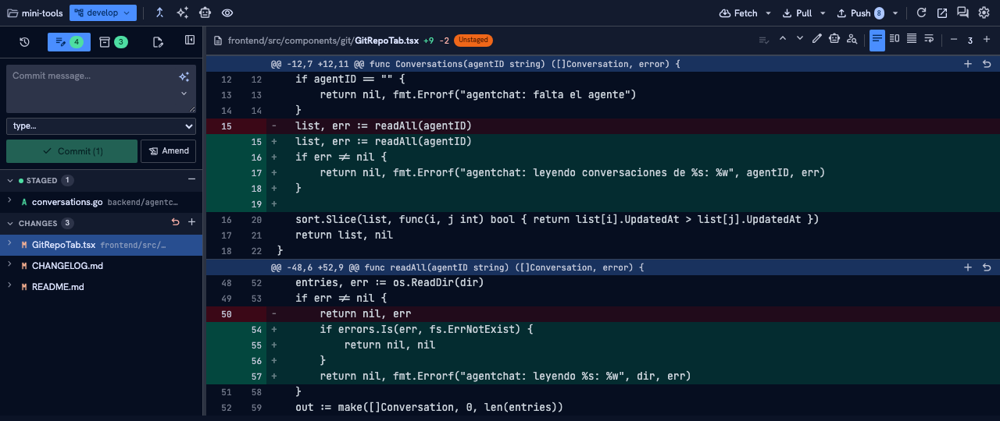
The commit box is on top, as in Source Control; the diff of the selected file takes the main area.
Write the message and press Commit (Cmd/Ctrl + Enter does the same). The ✨ button drafts it with the agent from the staged diff.
Amend rewrites the last commit with the message and what is staged — it loads the previous message for you. Only use it if that commit is not published yet.
Each file has stage / unstage and discard buttons (they show on hover); each group has its own for all of them. Click a file to see its diff; the arrow on its left unfolds the diff inside the list.
The diff
It uses the editor font and size from Settings, with the old and new line number on the left, a soft green and red, and a small header for every hunk. The header above carries the path, +n −m, whether it is staged and the icon actions, all with a tooltip.
On each hunk, the buttons at the right of its header stage (or unstage) and discard it. To stage some lines, select them and press the list-check icon.
Previous / next hunk, unified or side-by-side, ignore whitespace, wrap lines, −/+ context, blame, edit the file and ask the agent are the other icons.
Stash
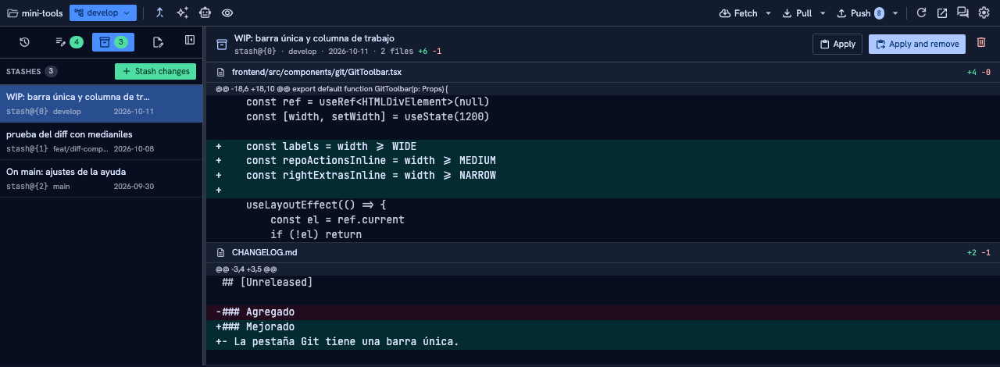
Pick a stash and see what it holds before applying it.
Stash changes sets aside what you have uncommitted. On each row (on hover) and above the preview: Apply (keeps the stash), Apply and remove (pop) and delete, which asks first because a dropped stash cannot be recovered.
Tip
The same tab fits a narrow window: the right-hand commit panel gives way before the graph does.
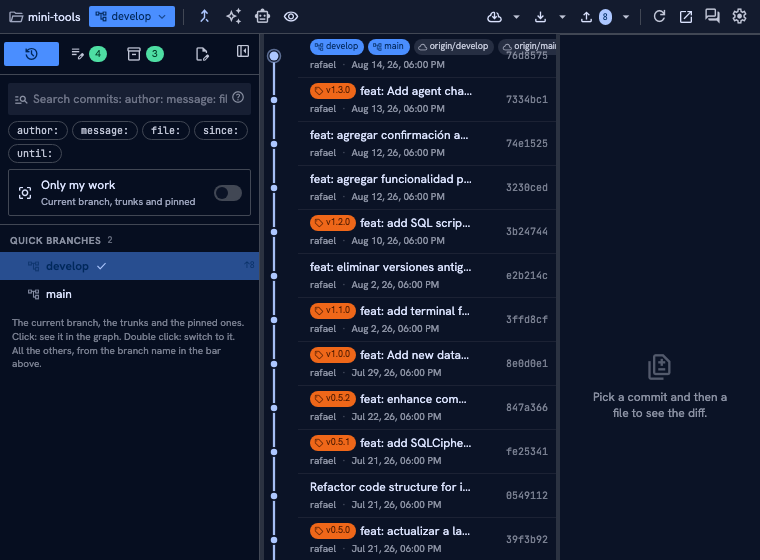
The Git tree in the sidebar
Branches, remotes, tags and stashes of every repository live in one place: the
Git module of the sidebar. The repository tab keeps the graph and the work; this tree is where you find
things, filter them and act on them.
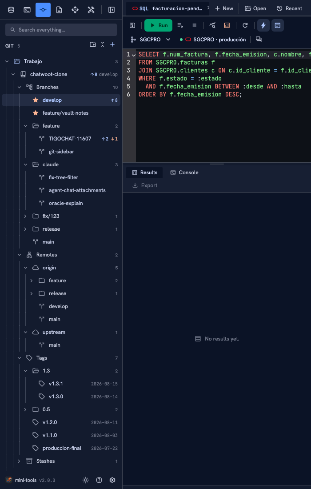
Pinned branches on top, the rest in folders by prefix, the current one highlighted with its ahead / behind counters.
Reading the tree
Click a repository to expand it, and double-click to open its tab. Under it you find Branches, Remotes, Tags and Stashes, each with its counter. Branches start open, with the folders that lead to the current branch already unfolded.
The current branch is bold, with a tint, and the repository row shows its name. ↑n ↓n are the commits ahead of / behind its upstream.
Folders by prefix (feature/…, claude/…) group the branches and show how many each holds. Tags group by version (1.31.*) and show their date.
The star pins a branch: it goes flat to the top of the list, outside its folder. Pins are stored per repository and also define the graph's Focus mode.
Take the graph to a branch or a tag
One click on a branch or on a tag opens (or brings forward) the repository's tab and takes the graph
to its commit, even if it's older than the loaded page. Double-click on a branch does the checkout.
Search in this branch… (right-click) narrows the graph's search box to that branch's history.
Filter branches and tags
The magnifier on a repository's row (or Filter branches and tags… in its menu) opens a box that
filters that repository's local branches, remote branches and tags at once. While there is text every folder
opens, so a match is never hidden inside a collapsed prefix. Esc clears it, and pressing it again closes the box.
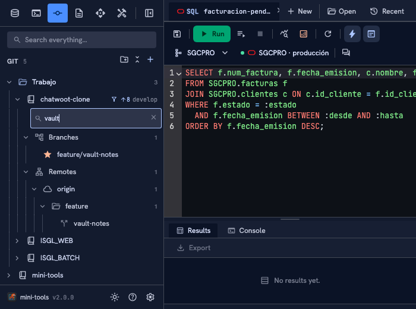
One filter for branches and tags: type vault and only what matches is left.
What the right-click does
Local branch: checkout, show in graph, create a branch from it, merge into the current one, rebase the current one onto it (asks first), search in it, pin, rename, set / unset upstream, copy name and delete.
Remote branch: checkout, show in graph, create the local branch that tracks it, merge, rebase, search, pin, copy and delete from the remote (push --delete, asks first).
Branch folder: Create branch in "feature/"… (the name starts with the prefix) and copy the prefix.
Remote: fetch, edit (name and URLs), copy the URL and remove. Tag: show in graph, create a branch from the tag (the usual way to work from a release), checkout, copy the name or the commit hash, push to origin, delete locally and delete from origin.
Stash: apply, pop and drop.
Note
If a merge or a rebase started here stops on conflicts, the repository's tab opens by itself, straight in the
conflict resolver.
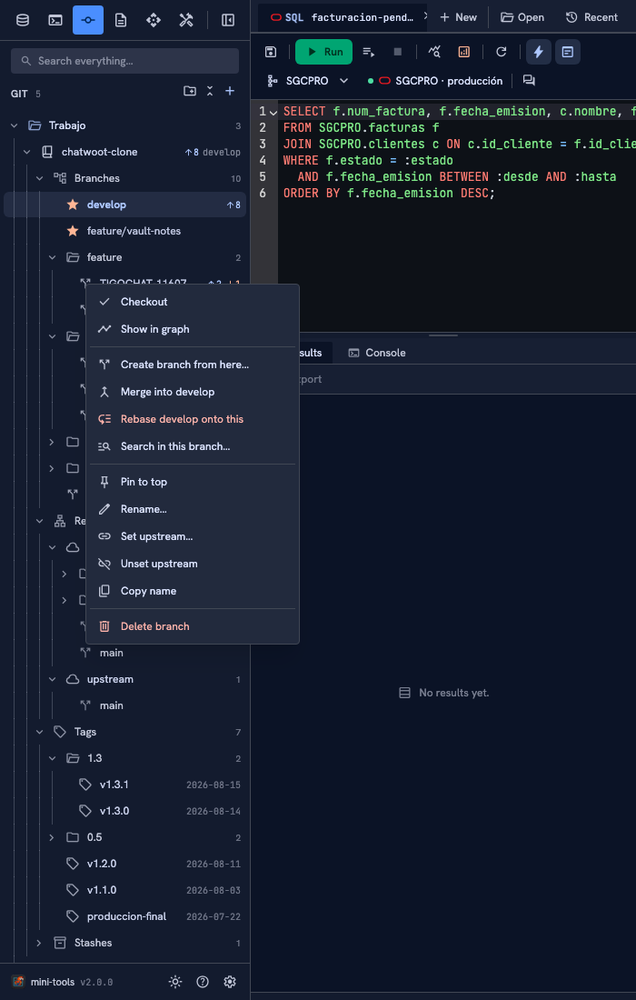
Everything you can do with a branch is one right-click away.
Keyboard
Every row is a focusable button: Tab moves between them and Enter activates. When a row has
focus its action buttons (pin, ⋯) show up without needing the mouse. The context menu moves with the arrows, Enter and Esc.
Identity, remotes and tokens
Which name you sign with, which server you talk to and with which credential — all three in
the same window.
Open it with the gear: the one on the repository's row in the sidebar, or the one in the
open tab's bar. It has three tabs: Identity, Remotes and
Tokens.
Identity: local or global
At the very top it says which name and email the next commit will be signed with, and
where that value comes from. It's the piece of information you almost never see and it explains 90 % of
"why does this commit show my old email?": a repository without its own identity inherits the global one,
silently.
This repository only writes to .git/config and overrides the global one.
Global (all) writes to ~/.gitconfig and reaches every repository on the machine that doesn't have its own.
Emptying a field deletes the key instead of saving it blank: that way the repository goes back to inheriting, which is what you mean when you clear the box.
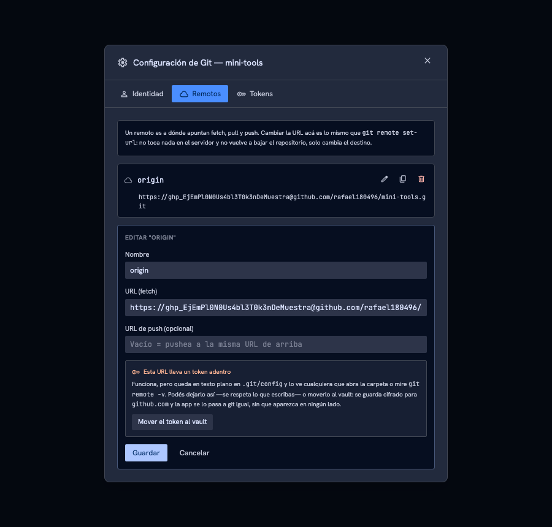
The URL is shown exactly as configured, with the token inside if it has one.
Remotes: change origin's URL
The Remotes tab lists each remote and lets you change its name, its
fetch URL and its push URL. It's equivalent to git remote
set-url: it doesn't touch anything on the server and doesn't download the repository again, it only
changes the destination.
Open the repository settings and go to Remotes. Shortcut: the gear in the "Remotes" section of the tree, or the one in the remote branches section of the branch panel, opens it already on that tab. It's also in the right-click menu on origin, as Edit remote…
Click the remote's pencil. The form opens with what's configured, untrimmed.
Paste the new URL and Save. If you also changed the name, the remote is renamed along with the tracking branches that hung from it.
Good to know
An empty push URL means "push to the
same one as above", which is the normal case. You only fill it in when you read from one place and write to
another (a mirror, a fork). Emptying it removes the detour: leaving both values set is what makes changing the
fetch URL seem to work while pushes keep going to the old server.
When the URL has the token inside
A remote configured as https://<token>@github.com/user/repo.git works, but it stores the
token in plain text in .git/config: anyone who opens the folder or runs
git remote -v sees it.
The app shows it to you, it doesn't mask it. Hiding it on screen doesn't remove it from
anywhere —it's still in the file, where anyone can read it— and in exchange it hides the only thing you need to
know: that it's there, and which one it is. A remote that stopped working because the token expired would look
just like a healthy one.
Move the token to the vault is the real way out: it stores it encrypted for that server and leaves the URL clean. The app still hands it to git just the same, with no command line or remote exposing it.
If you want to leave it in the URL, that's respected: what you type is what gets saved.
A bare username (https://rafael@github.com/…) doesn't trigger the notice: there's no secret there to move.
Tokens and remembered passwords
The Tokens tab stores one PAT per server, encrypted in the vault, and uses
it automatically for fetch, pull and push against that host. It can't be read back from the app: if you lose
one, generate another in your forge and replace it.
Below is git's credential helper, which is something else: it's git's own configuration
(system keychain, "remember for an hour", plain-text file) and it's the one used by the terminal and the hooks
— that is, the same repository when you use it outside the app.
Recover with the reflog
The safety net under reset --hard, rebase and push --force.
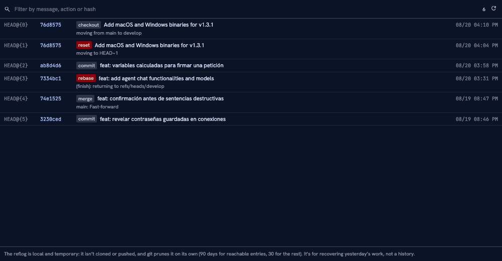
The last two hundred HEAD movements, with the history-rewriting actions highlighted.
Recover a lost commit
Open the Reflog tab in the bottom panel. It lists the latest HEAD movements, with history-rewriting actions marked in red.
Find the commit by its message — the filter at the top searches by message, action or hash.
Create a branch there. It's the action offered first because it doesn't move anything, doesn't touch your uncommitted work, and gives the lost commit a name of its own.
If you really want to move the current branch back to that position, reset --hard is there too — behind a confirmation that says what will be lost.
Careful
The reflog is local and temporary:
it isn't cloned, it isn't pushed, and git prunes it on its own (90 days for reachable entries, 30 for the
rest). It's for recovering yesterday's work, not a history.
SSH and local terminals
A real terminal (PTY), not an emulation: top, vi and colors
work.
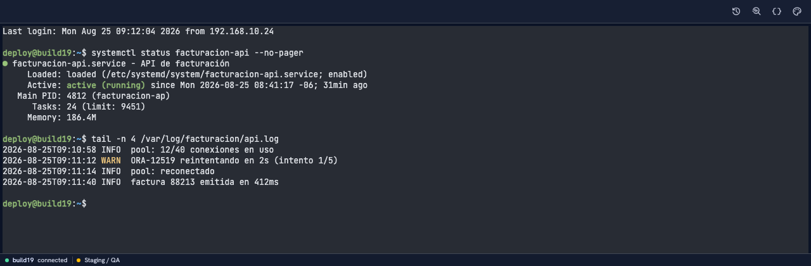
One tab per session —you can have several against the same server—, with history, error analysis, snippets and a color theme.
Tools on top, status at the bottom
At the top right, four icons and the chat: history, analyze,
snippets and theme. What each one does is in its tooltip — on a terminal,
the screen where content rules, the chrome has to get out of the way.
At the bottom left, the footer: which server the tab is bound to, whether the session is
still alive and which environment the connection is marked with (in its color; red with a
glow if it's production). It goes there and not on top because that's where the command output ends, which is
where you're already looking when you wonder whether it was still connected.
Sessions
A real interactive terminal (xterm.js), with a PTY and automatic resize.
Closing the tab ends the session on the remote side, it doesn't leave it hanging.
Local terminals (PowerShell, zsh, bash, Git Bash…) in the same module, with the same snippets and their own encrypted history.
If the server password has expired
When the account's password has expired, the server won't let you in: it asks for a new
one. The terminal says so plainly and opens a dialog to change it, with the reason the server gave in
view ("You are required to change your password immediately").
Type the new password twice. It's the only place in the app where you're asked to repeat
it, and it's not a formality: here a typo isn't rejected, it becomes the account's real password and locks you
out of the server.
Change and connect changes it on the machine. If the server rejects it for being too
short or in the dictionary, you'll read its explanation, not a generic "couldn't do it".
Once the server approves, the new password is saved in the vault connection and the
terminal reconnects by itself.
Server first, vault second
The order matters: if it were saved
before testing it, a rejection would leave in the vault a password the machine never accepted, and the next
connection would fail as if it were misconfigured. For the same reason, cancelling the dialog touches nothing
— the server password is still expired and the terminal, still disconnected.
This applies to connections that authenticate with a password. A key-based connection has
no account password to expire. Test Connection, in the connection dialog, also names the
expiry instead of the generic authentication error.
Several terminals against the same server
You can have as many as you want against the same host: one compiling, another watching a
log, another for poking around. Each tab is a separate session, with its own buffer, its own directory and its
own scrollback.
Hover over the server's row in the sidebar and press + (or New terminal
in its ⋮ menu). It always opens one more session.
Clicking the name does the usual thing: it opens the terminal, or takes you to the one
that's already open. That way browsing the tree doesn't leave stray shells against production.
From the second one on, the tab is numbered: Terminal — PRODMAIN (2).
A single connection
The sessions are not several
SSH connections: they're several channels over the same one. One authentication, one socket and one entry in
the server log, even with five tabs open — just like the console and the file explorer, which already shared
the connection.
In the sidebar, the server shows how many live sessions it has when there's more than one.
Disconnect closes all of them; closing a tab closes only its own.
Everything that follows a terminal follows that terminal: the directory, the line history and
Analyze error belong to the tab you asked from. What asks about the connection —the
chat's @ssh: and the MCP tool— reads the terminal you last typed in.
Snippets
Saved commands, reusable in any session, with folders and search. Run executes each line;
Paste types them without confirming, for when you want to review before pressing Enter.
The script is written in an editor with shell highlighting: Tab indents,
Ctrl+Enter saves and Esc cancels. The same form chooses the folder.
The panel widens by dragging its left edge and remembers the width; double-clicking the
edge restores the original. To organize: drag a snippet or a folder onto another folder (or onto the
background, to move it to the root), double-click a folder to rename it, and the + on its row
creates a snippet already inside it.
Encrypted, filtered history
Commands are saved per connection, encrypted. Lines that look like they carry a password aren't
saved — a history that records the full mysql -p… is a credentials file by another
name.
Analyze an error
The magnifier button (Analyze) sends the terminal output to the agent with the server's
operating system as context — or exactly what you have selected, if there's a selection. It returns text: it
doesn't run anything. The chat button is right next to it, in the same row: going from
"analyze this for me" to "ask it something else" shouldn't mean crossing the whole window.
SFTP explorer
Two panels, and each one points wherever you want: your machine or any of your servers.
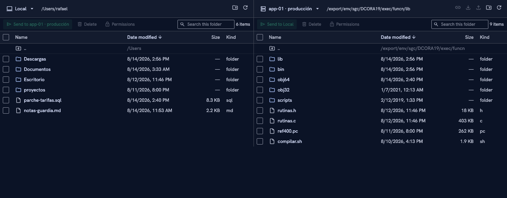
All four possible combinations, including server ↔ server.
It opens from the SSH tree and reuses that connection — no need to authenticate again. Each
panel picks its host at the top left, so there are four combinations: local → server,
server → local, server → another server (streaming through your machine) and
local → local.
Getting around
Double-click a folder to enter it; a file opens in an editor tab.
The ".." row goes up one level, and shows where to: on a deep path knowing you're going up isn't enough, you need to know where.
Each panel's search box filters what's already listed —it doesn't descend into subfolders or ask the server again—, so it's instant. Esc clears it.
Columns can be sorted and resized, and the ones that don't fit hide themselves: first Kind —which is the extension, already in the name— and then Permissions. We'd rather hide what's expendable than cut it off: a missing column makes sense, a half-shown one looks like a bug.
Select several, as in any file explorer: a single click selects a row, Ctrl/Cmd+click adds or removes without losing the rest, Shift+click selects the range from the last row you touched, and each row's checkbox toggles without holding any key (with Shift it also selects a range). The header checkbox selects everything the filter shows and indicates when some are selected. Ctrl/Cmd+A selects what's visible, Esc clears, and clicking the "N selected" counter clears too.
Transfer
Select with the checkboxes, with click and Shift/Ctrl (see above), or just drag from one panel to the other — dragging a row that's already selected takes the whole selection.
The button says where it goes: "Send to app-01 · production", not a generic "Send".
If something already exists on the other side, you're asked before it starts and for each file: replace, skip or rename.
The queue shows percentage, bytes and files live, and each transfer can be cancelled on its own without touching the others. Large batches run in parallel.
With hundreds of files there's a wait before the copy
Checking what exists on the other side and counting what's inside folders are queries to the server, and
with a large selection —especially between two remotes— they take a few seconds. The row appears in
the queue as soon as you press the button saying what it's doing ("Checking destination…",
"Preparing…"), and meanwhile Send stays disabled: there's no need —and it's not a good idea— to press
it again, because each click would be one more transfer.
Permissions
Without remembering the octal
The Permissions
button in the action bar —or right-click → Edit permissions— opens a dialog with
Read/Write/Execute checkboxes for Owner, Group and Others, and shows the equivalent chmod as you
change them.
It applies to the whole selection, not just the row you right-clicked — same as Send and
Delete. When several items with different permissions are selected the dialog warns you: chmod is
absolute, so on saving they all end up with the same mode. If any fail (another owner, a read-only mount) it
says which ones and the rest are applied anyway.
It's not chmod -R
On a folder it changes the
folder's permissions, not those of its contents.
The first time on macOS
System permissions
When you open Downloads, Desktop or
Documents from the local panel, macOS asks for permission once. If the dialog doesn't appear, grant it in
System Settings → Privacy & Security → Files and Folders. Keep in mind that a freshly installed
version counts as a different application for macOS: the permission is requested again.
Port Killer
Which process is holding port 3000 —and ending it— without leaving the app or remembering
lsof, netstat and kill.
It lives in the Utilities module (the hammer-and-wrench icon in the sidebar menu). Click Port Killer
and it opens in its own tab; if it's already open, the click takes you to it. It works the same on
macOS, Windows and Linux.
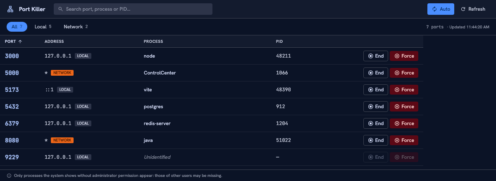
Every listening port, with who holds it and whether it's exposed to the network.
The list
One row per TCP port that's listening right now: the port, the address it
listens on, the process and its PID. The address comes with a badge:
Local — it only accepts connections from this machine (127.0.0.1, ::1). A typical dev server.
Network — it listens on every interface, so other machines on the network can reach it. Worth a look if you didn't expect it.
The search box filters by port, process name, PID or address, and the All / Local / Network chips
(each with its count) answer at a glance what's exposed to the network. Click a column header to sort
by it. Refresh reads again, and Auto does it every few seconds. On a row, Open
(it shows when you hover it) opens http://localhost:<port> in the browser, handy when the port is a web server.
It costs nothing while closed
Nothing in this utility runs in the background. The tab only reads the ports while it's open and in view:
switch to another tab, or minimize the window, and it stops asking. Close the tab and there's nothing left running.
Ending a process
Click End on the row. The app confirms first, naming the process, its PID and the port it frees.
The process is asked to shut down cleanly. If it ended, the port is free and you'll see a notice saying so.
If it ignored the request and keeps running, the notice says so: use Force, which cuts it off immediately (the process loses anything it had unsaved).
Windows
Windows has no "ask politely" for an arbitrary process, so there End and Force do the same thing.
Permissions
Your own processes end directly. A process that belongs to another user or to the system needs
administrator permission: the app tells you so and, if you accept, asks the operating system for it —the password
dialog on macOS, the pkexec prompt on Linux, the UAC prompt on Windows—. Say no there and the process
keeps running; nothing is ended without that approval.
What you won't see
Without administrator permission the system only reveals the processes of your own user, so those of other users may
be missing from the list. System processes, this very app and any process the system wouldn't identify show
without the buttons: ending them isn't offered from here.
Linux
It uses ss (or lsof if there's no ss). A minimal distro with neither shows an error
explaining it, instead of an empty list that would read as "nothing is listening".
Activity Monitor
What is using your CPU and memory right now, and how much network is going in and out —with
the option to end whatever is misbehaving— without opening the operating system's own monitor.
It's in the Utilities module, next to Port Killer. It opens in its own tab and
works the same on macOS, Windows and Linux.
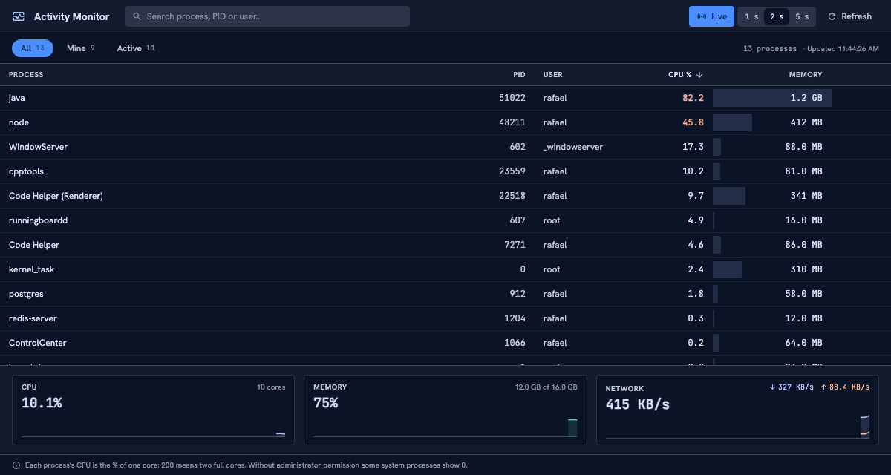
The process list on top, the whole machine's state at the bottom.
The process list
One row per process with its name, PID, user, CPU %
and memory; a bar behind each memory figure compares them at a glance. Click a column header to
sort by it —the default is CPU, biggest first—. The chips All / Mine / Active narrow
the list to everything, only your user's processes, or only those using CPU right now; the search box filters by
name, PID or user.
CPU is the percentage of one core: 200 means two full cores. Above 25 % the figure is highlighted, and above 80 % it turns red.
Rows with the same value keep a stable order, so the list doesn't "dance" between refreshes.
The summary at the bottom
Three cards keep the whole machine in view while you scroll the list: CPU (total, over every core),
Memory (used out of installed) and Network (download and upload rate), each with the last
two minutes drawn as a line.
Live, paused and the interval
Live refreshes every few seconds; click it to pause and the list stays still, handy to read a
figure without it moving. Next to it you pick the interval: 1, 2 or 5 seconds. Refresh reads
once, right now.
It costs nothing while closed
Nothing runs in the background. The tab only reads the system while it's open and in view: switch to another
tab, or minimize the window, and it stops; when you leave, the app also drops the reading it kept to compute the CPU %.
Close the tab and nothing is left running or stored.
Ending a process
Hover a row (or click it) and two icons appear: End, which asks the process to shut down cleanly, and
Force, which cuts it off immediately. Both confirm first, naming the process and its PID, and both
work exactly like in Port Killer, including the administrator
permission request for processes of other users. System processes and this very app have the buttons disabled.
What it doesn't show
There's no disk or per-process network column: those numbers don't exist in a portable way, and the ones that do need
administrator permission. On Windows processes don't carry an owner, so the User column and the
Mine chip don't appear. Without administrator permission some system processes report 0 % CPU.
Docker
See and operate your containers, images, volumes and networks —and read their logs live— without
leaving the app or typing docker ps.
It's in the Utilities module and opens in its own tab. It works with whatever Docker
you already have —Docker Desktop, OrbStack, Colima or Docker Engine—, because it talks to the docker command
and respects its active context; the context name and version show next to the title so you know which engine you're
looking at.
In the sidebar, Docker unfolds a submenu —Containers, Images, Volumes, Networks and Builds—, like Git's, each with its count. Clicking one opens the Docker tab on that section (or takes you to it if it's already open) and highlights it in the menu. The tab itself has no menu of its own: it shows the section's content across the whole width, with the section name next to the title. The counts update while the tab is in view.
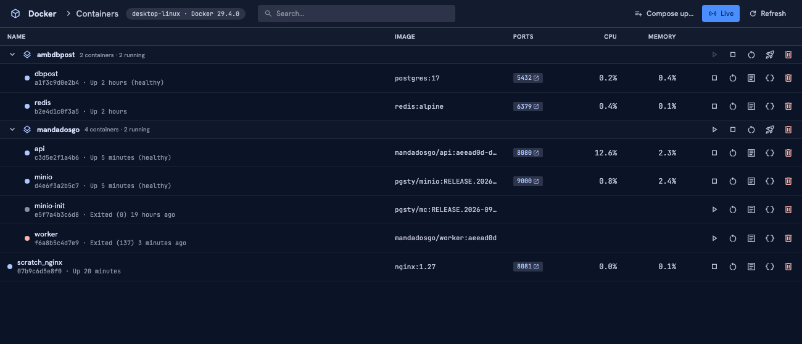
Containers grouped by Compose project, like Docker Desktop.
Is Docker installed and running?
The first thing the tab does is check. There are three outcomes. The same check is done by the Utilities list in the sidebar: if Docker isn't installed or its engine isn't running, the Docker entry shows disabled (greyed out, with an Unavailable tag and the reason on hover) and won't open a tab that would only show an error. It re-checks every few seconds while that list is in view, so it enables itself when Docker starts; clicking the entry also re-checks.
Not installed — it says so and offers a link on how to install it, plus a Check again button.
Installed but the engine isn't responding — it shows what Docker answered and, on macOS and Windows, an Open Docker Desktop (or OrbStack) button. It re-checks every few seconds, so as soon as the engine is up the lists appear by themselves. On Linux the engine is a system service: start it by hand.
Running — the lists.
Containers
Grouped by project (the Compose stack), with the standalone ones at the end. Each row shows a state dot —
blue running, grey stopped cleanly, red exited with an error (the one you're usually
looking for)—, the service name, its short id and status, the image, the published ports and the CPU and memory of
the running ones.
Click a port chip to open http://localhost:<port> in the browser.
Per row: start / stop, restart, logs, inspect and delete.
On the project line (Docker Compose): start, stop, restart, up (create or recreate what's needed and leave it running, docker compose up -d) and down (stop and delete the project's containers and networks; volumes are kept). Compose runs with the same files the project was started from, read from its containers' labels; up can take minutes if it pulls or builds images, and a spinner shows while it works.
Compose up… in the toolbar lets you pick a docker-compose.yml from disk and bring up a new project from it.
Deleting a container and down always ask first. Named volumes are kept; whatever was written inside the container isn't.
Live logs
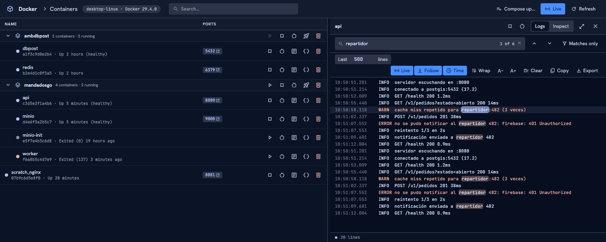
The panel opens next to the list; the table gives up the image, CPU and memory columns to make room.
Click a container's name (or its logs icon) and its logs open on the right, live:
Search with an index. Type in the search box and every match is highlighted; the counter says 3 of 12, and Enter / Shift+Enter (or the arrows) jump to the next and previous match. Matches only hides the lines that don't contain the text.
Size, your way. Type any number of earlier lines to load (1 to 10,000; the presets are just suggestions), make the text larger or smaller, and drag the panel's edge to widen it (double-click goes back; the button at the top maximizes it).
Auto-refresh.Live is on by default: new lines arrive by themselves. Click it to pause and read without movement. Follow keeps the view on the last line and turns off by itself if you scroll up.
Stop or start the container from the panel's own header, without going back to the list.
Also: show or hide the time, wrap long lines, clear the screen and copy. Lines with error or fatal show in red and warn in orange.
Export logs
The Export button saves the logs to a file (.log), choosing where in the system dialog. You set a maximum number of lines, from 100 to 10,000 (the last ones are saved, which is where the problem usually is). Two options: from the container history —the last lines Docker has for it, not just what the panel shows— or what is on screen, with the search filter applied. The notice at the end says how many lines were really written, which can be fewer than the limit if the container doesn't have that many. The file is created readable only by you, since a log can hold data that isn't for anyone. Build logs export the same way (next section).
It costs nothing while closed
The list only refreshes while the tab is open and in view. The log stream is the only thing that stays open, and only while
its panel is: closing the panel, switching tabs or closing the app ends it. Nothing is left running.
Builds
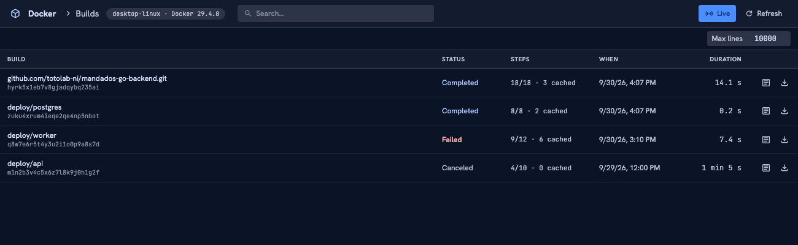
The build history, with a log you can read or export.
The Builds section lists the image build history (docker buildx history): name, status —completed, failed, canceled—, steps (done, total and how many came from cache), when and how long it took. Click one to read its full log in the panel (a very long one shows only its end, where the error usually is), and use the download icon to export it to a file, with the same 100 to 10,000 line limit. Needs buildx 0.20 or newer; an older Docker says so instead of showing an empty list.
Images, volumes and networks
Three simple tables with inspect (the full configuration, ready to copy) and delete. An image shows
how many containers use it, and a volume how many mount it; what is in use can't be deleted —the button is disabled and
says why—, and neither can Docker's default networks.
What it doesn't do
It doesn't pull images, doesn't run a build, and doesn't prune. It brings projects up and down with Compose, but doesn't edit their files.
The goal is to see, read and export logs and start, stop and delete; for the rest the terminal is still the tool.
Logs lose terminal colors on screen (they'd show as stray codes).
AI Chat
A full-screen chat with Claude Code, Codex, OpenCode, Antigravity or a model server,
with the history of every conversation on the left and a search box that looks inside the messages.
It lives in the Utilities module. Click AI Chat and it opens in its own tab;
if it's already open, the click takes you to it. You can have several AI Chat tabs —⇧⌘N / Ctrl+Shift+N — each with its own project and provider, and they keep working when closed. Where to open another: the ▾ of New chat in the chat header, the + on the AI Chat row in Utilities, and + New ▾ → AI Chat in the tab strip. See Background chats and AI sessions. It's the same chat as the side panel
(⌘L / Ctrl+L), with room to choose and resume conversations. While this tab is in view the side panel steps aside:
there's no second chat over the same thing.
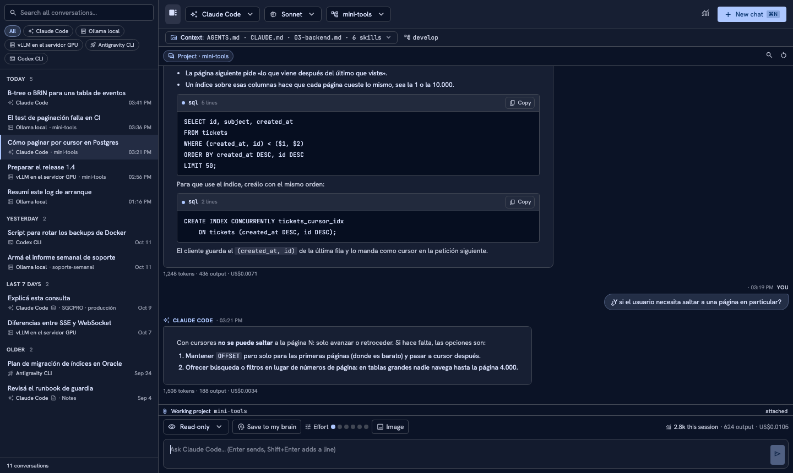
History on the left, the conversation in the middle, and who answers —provider, model, project— at the top.
Start a conversation
A new chat opens with suggestions to get started: click one and it's typed in the message box for
you to edit before sending. Enter sends and Shift+Enter adds a line.
⌘N / Ctrl+N (or the New chat button) starts another one; if you already have an empty one
open, it takes you back to it instead of piling up blank chats. New chat opens the conversation in this tab; to have another one at the same time, use New tab or the ▾ of that button (see where to open another chat tab). The empty state reminds you.
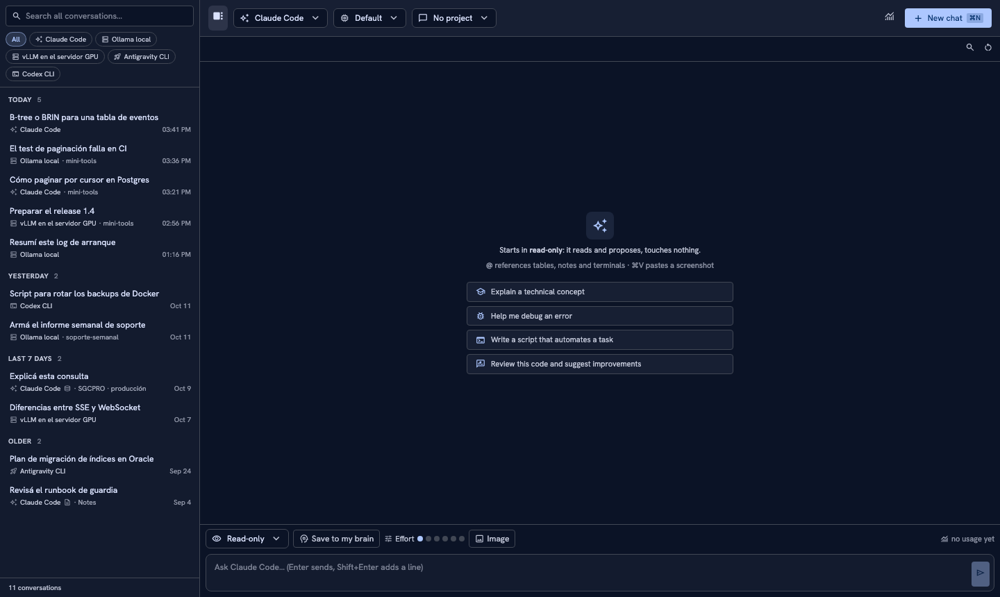
An empty conversation: four suggestions and the box, with the history one click away.
Width, adjustable history and narrow panes
The chat fills the full width of the tab: messages and the message box go edge to edge, with no narrow column and empty margins. To keep it
readable in a big window, only the running text of a reply (paragraphs, lists, quotes) is capped at about 100 characters per line;
code blocks and tables use the whole width, and a short reply takes the room it needs instead of stretching.
The code blocks in a reply are colored like the editor (from the tag the model gave them: sql, ts, bash…), and the header
names the language in full. From four lines up they carry line numbers, which are not copied when you select; those over 30 lines start folded with
Show N more lines. A diff block paints what was added in green and what was removed in red.
Adjustable history — drag the list's right edge to widen it (the width in pixels shows while you drag). With focus on the edge, the
←→ arrows move it (Shift for bigger steps; Home and End jump to the minimum and maximum) and a
double-click restores the original width. The size and whether the history is open are remembered on this computer. It never leaves the chat with less than about 420 px.
Narrow tab — what counts is the width of the tab, not the window: with the sidebar open or the agent panel docked, the tab can get small
even in a huge window. Below about 760 px the history stops being a column and the header button opens it as a drawer over the chat (picking a
conversation or Esc closes it), and the header compacts: the selectors share the row and New chat keeps only its icon. When the tab widens again, the history comes back by itself.
Usage — the chart button in the header swaps the body for the token usage panel by agent and AI provider; the chat keeps running behind.
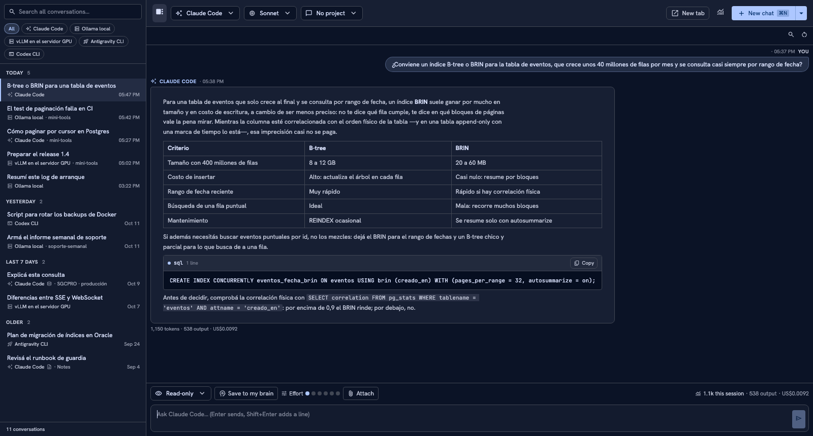
In a wide window: the text stays readable; the table and the code use the width there is.
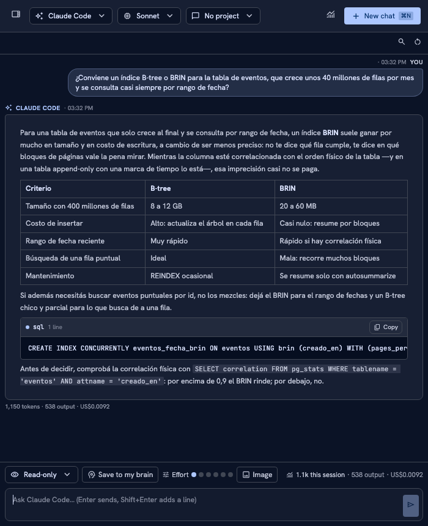
In a narrow tab the history folds into the header button.
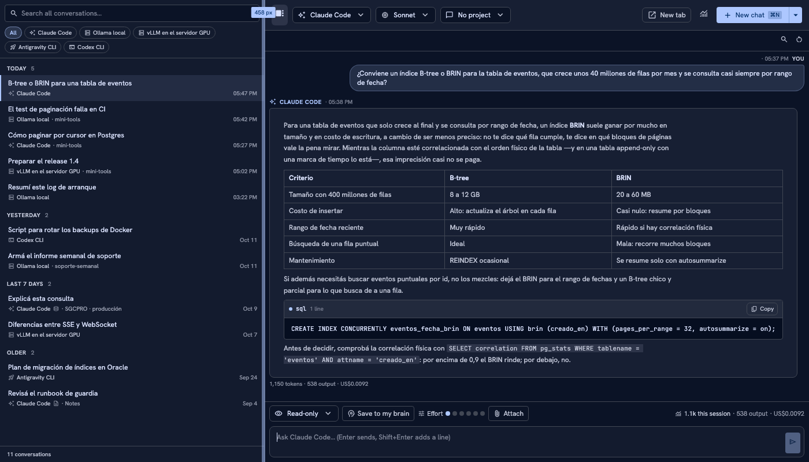
Dragging the history edge: the width shows while it moves and is remembered.
Provider, model and project
Provider — the installed CLIs and the AI providers you enabled (servers of your own and cloud APIs). The last menu option, Add AI provider…, opens the form right there and, on save, picks the new provider: nothing needs installing. Between providers of models you can switch in the middle of a conversation and it stays the same one; switching to or from a CLI opens a new conversation, because a CLI keeps its own thread.
Model — the list is reported by the provider itself, and Default uses whichever it has configured. It applies from the next message on.
Project — one of the repositories you added in the Git module, a folder you opened, or none. The conversation records it, and its name and location travel as a chip with your messages so the agent knows which one you mean; the chip can be dropped from the message. A conversation that started in another module (a connection, a note) shows its origin here and can't change project. With a model server, it is also the working project of its file and command tools, and the app loads its instructions and skills by itself: see Projects, folders and automatic context. Without one, the chat says that only the MCP tools are available.
Switch provider mid-conversation
Between AI providers (your own servers and cloud APIs) you can change who answers without starting another conversation: pick the other provider in the header and
the conversation keeps its history, its project and its place in the list. What it doesn't keep is the provider's “memory”: the new one receives the earlier messages as context and nothing else, and its context window may be different.
A notice under the header says who answers now and who did before; the earlier answers stay signed by whoever wrote them. It applies from your next message.
Continue with another provider. If a conversation's provider was disabled or deleted, its row in the history is marked in orange with the provider's name (or Deleted provider) and it still opens: you can read everything that was said, the message box stays locked and a strip above it offers
Continue with another provider. Pick one of the enabled ones and the conversation carries on there, with no new conversation. If no other provider of models is enabled, the strip offers to add one.
CLIs are different
A CLI (Claude Code, Codex, OpenCode, Antigravity) keeps its thread in its own storage, and there is no honest way for another provider to continue what it was doing. Switching to or from a CLI opens a new conversation, as before.
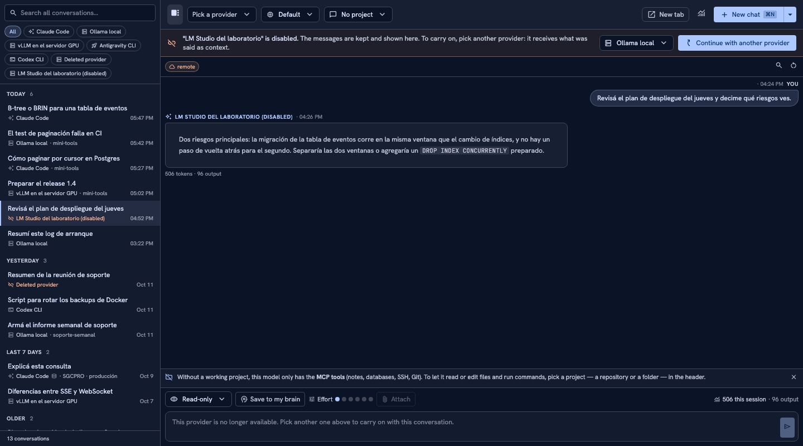
A conversation whose provider is no longer available: readable, with a strip to continue with another one.
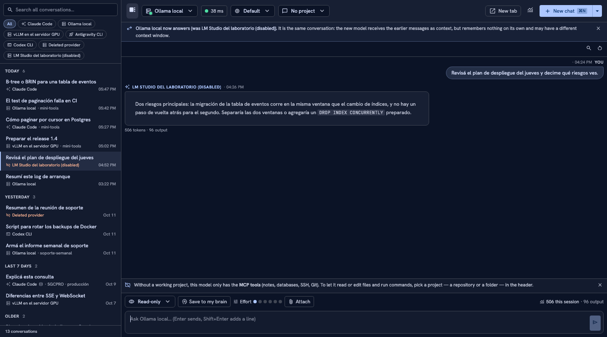
After continuing: same conversation, new provider, and a notice that says what changed.
History and search
The list on the left holds every conversation from every module and provider, grouped by Today,
Yesterday, Last 7 days and Older. Each row shows the provider and, when it applies, where it came from.
A dot in front of the title means that conversation is answering right now.
Resume — click a conversation: its messages are redrawn and the thread continues where it was left, even in a model server's case, which has no history of its own: the app saved it.
Search — looks at the titles and the text of the messages, so you find “that one about cursors” even if the title says something else. Esc clears it.
Filters — the Filters button next to the search box narrows the list by provider, project, date and state; see Filter the history.
Rename and delete — appear on the row when you hover it or tab to it. Renaming does not move the conversation up the history (see Name your conversations). Deleting asks first, and only removes it from the app's history: it doesn't touch what the provider keeps on its own.
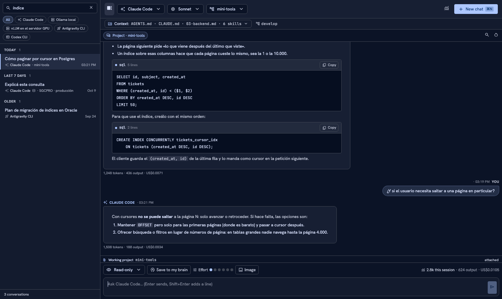
The search also finds the words inside the messages, not just in the titles.
Filter the history
Next to the search box there is a Filters button with a badge that counts how many criteria are on. It opens a panel over the list (Esc or a click outside closes it) with:
Provider — tick one or several (Claude Code, Codex, a model server…); each shows how many conversations it has. With none ticked you see them all.
Project or origin — where the conversation came from: a git repository, a folder you gave the app, a database connection, an SSH server, a note, or No module for the old ones.
Date — All time, Today, 7 days or 30 days, by the last activity.
State — Working (answering or waiting for a permission), Unread (finished without you seeing it) or In background (its tab was closed but the chat is still open).
Order — Recent (grouped by date, with a count per group) or Name (one alphabetical list).
What is on is summarized under the box as removable chips, on a single line that scrolls sideways when there are many; Clear removes everything. Filters combine with the search (which still looks into the text of the messages) and are remembered per tab: a new tab starts with the ones you used last. The panel is operated with the keyboard like any other: Tab to move, Space to tick, Esc to close.
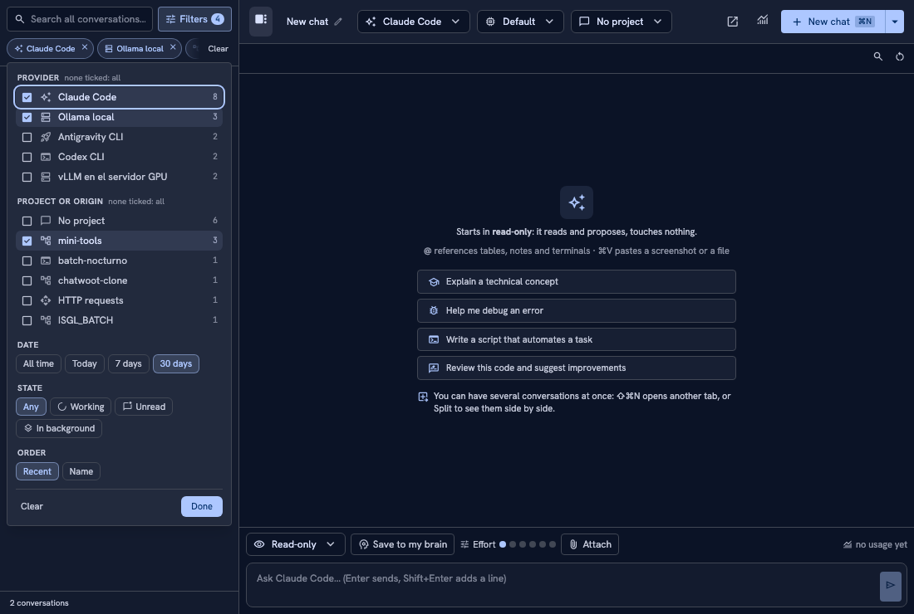
The panel opens over the list; the active filters stay below the search box as chips.
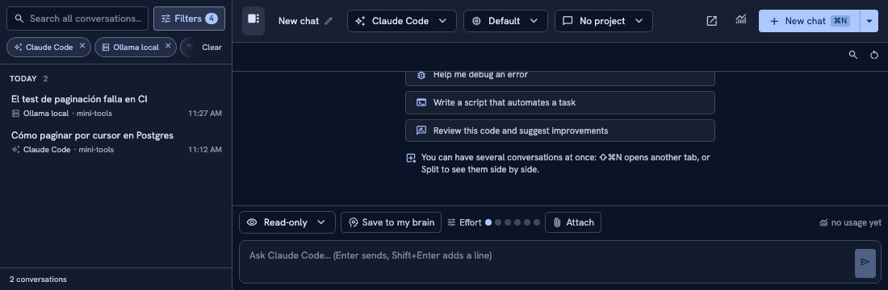
Four filters on: the badge counts them and the chips can be removed one by one.
Name your conversations
The tab label, the row under Utilities → AI Chat and the Open list show the name of the conversation; while it has none they show the project, and New chat if there is neither. A new conversation is named after your first message — its first line, without @ references or code blocks, up to about 60 characters. Conversations that already say “Chat with Claude Code” keep that name until you rename them.
Tab — double-click its name, or press F2 with the tab focused; also right-click → Rename….
Utilities → AI Chat — the same on the row of each open tab: double-click, F2 or right-click.
Chat header — the name with its pencil next to the history button; click it, or press F2 anywhere in the tab.
History, Open and Recent — the pencil on a history row; in the lists of the sidebar, ⋯ or right-click → Rename….
Enter saves and Esc cancels; a blank name changes nothing and the limit is 120 characters. Renaming does not move the conversation up the history. If the chat has no message yet, the name is saved with the draft and the first message does not replace it.
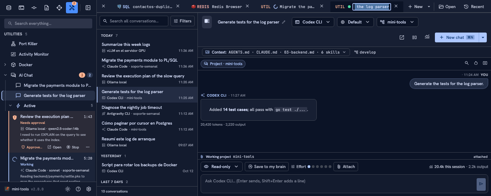
Double-click on the tab: the name becomes a field, and the conversation is renamed everywhere.
While it answers
Stop — while a turn runs, the send button becomes a red Stop. What you type in the meantime is queued and goes out when it ends.
Copy — every message has its Copy button (it shows up when you hover it or tab to it), and every code block has its own bar with Copy.
Tokens — under each answer, the tokens of that turn; at the bottom, the running total of the conversation.
Attach — the paperclip next to the model selector adds images, PDFs and text or code files (you can also drag them onto the chat or paste them with ⌘V); a chip warns if the model can't read one. See Attachments.
You choose where to read — if you scroll up to re-read while the answer keeps arriving, it won't drag you back down: a jump to the latest message button shows up.
Example: pick up yesterday's conversation
Open Utilities → AI Chat.
Type a word you remember in the history search, for example cursor.
Click the conversation. Its messages show up; type your follow-up and press Enter.
If you want another model for the follow-up, pick it in the header before sending.
Where the data lives
The conversations are stored in the app's encrypted vault. Search happens on your machine; the only thing that leaves
it is what you send to the provider you picked.
AI providers
Your own servers and cloud APIs in one place: turn them on and off, put them in order, test them, and see the models
each one has and how much you have used it —without opening a terminal or a provider's console.
It's in the Utilities module and opens in its own tab (it used to be called Models; a tab you already had open keeps working).
On the left it lists every provider in three groups —Local, Remote and Cloud— and on the right it shows the selected one in three
sections: Models, Usage and Settings. It is the same list as Settings → AI, which shows a summary of it, so a change in one shows up in the other.
A provider is a server of your own (Ollama, LM Studio, vLLM…) or a hosted API used with an API key (OpenRouter, OpenAI, Anthropic, Groq…).
The tab uses each provider's address, token or API key, headers and certificate option, so an Ollama behind a proxy with an X-Api-Key header is managed exactly like a local one.
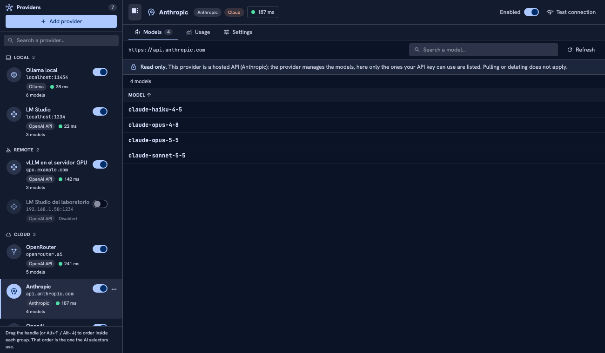
The providers column in three groups, and the models of the selected one (a hosted API: read-only list).
The providers column
The left column lists every provider you saved, grouped by where it runs:
Local — it runs on this machine: a loopback address (localhost, 127.0.0.1). What you send it never leaves the computer.
Remote — a server of your own on another machine of your network.
Cloud — a hosted API: OpenRouter, OpenAI, Anthropic, Groq, DeepSeek, Mistral, Together, xAI or Google Gemini. What you send it goes out to the internet.
The group comes from the address, not from a setting: you never pick it. Each row shows a generic icon for its type, the name, the host, the
enabled switch, the type (Ollama, OpenAI API or Anthropic), the status dot with the latency of the last check (green it answers, red it doesn't)
and how many models it reported. Click a row —or press Enter on it— to see that provider: the header shows its name, badges and status.
↑↓ move between rows, and with more than six providers a search box appears. The last one you used is remembered.
Drag the column's edge to change its width (with the focus on it, ←→ do the same, and a double-click goes back to the
original width); it is remembered. The button at the left of the header hides the column. In a narrow tab the column stops taking
space and opens as a drawer over the table instead; picking a provider closes it.
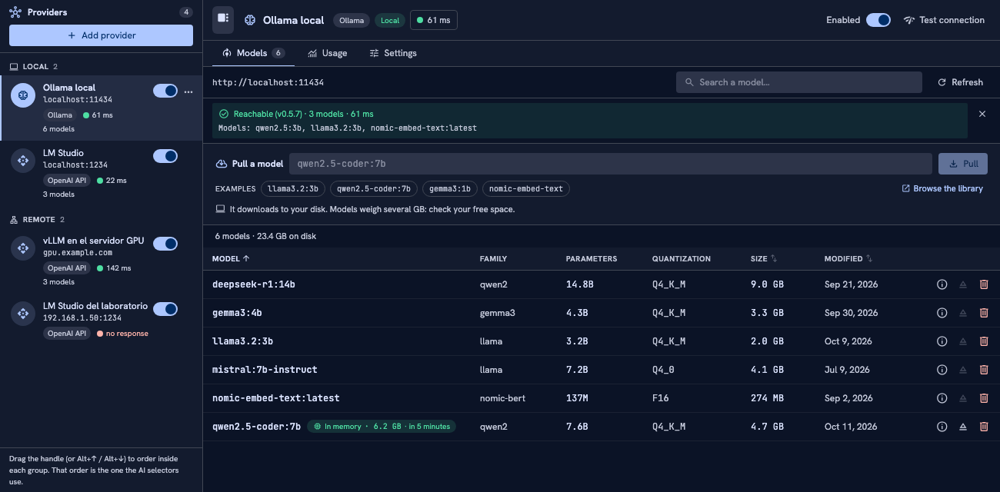
Test connection shows its result under the header, and the dot and latency in the column update with it.
Add, edit, duplicate and test a provider
Every action is in the Settings section of the selected provider and in the ⋯ menu of each row (also on right-click), so you don't
have to select a provider to act on it. Test connection is in the header too.
Add provider (top of the column) opens the add form with the shortcuts: the cloud ones, which only ask for an API key, and Ollama, LM Studio, vLLM… for servers of your own. When you save, the new provider is selected.
Edit opens the saved provider's form in a dialog. The token or API key and the extra headers are not shown —they never leave the vault—: leaving them as they are keeps them, and Remove token / Remove API key and Replace headers are explicit actions.
Test connection checks the provider right now with its saved token or key and headers, and shows the result under the header: version and models, or the exact error. The status dot and latency in the column update too.
Duplicate opens a new form with the type, address, certificate option and context window of the provider, named “… (copy)”. The token, API key and headers are not copied —the app can't read them back—, so type them again if the new one needs them. Handy to register the same machine under another address, or a second provider that is configured almost the same.
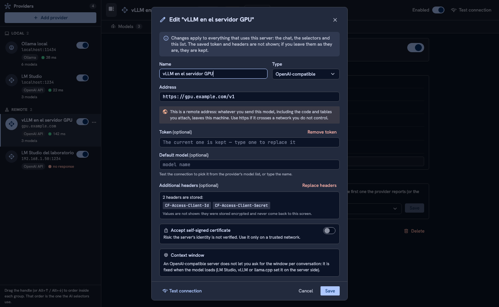
Editing a saved provider from the tab: the saved headers appear by name only, never their values.
Delete a provider
Delete asks for confirmation and explains what it does and what it doesn't:
It removes the connection from the app: the provider disappears from the list and from the chat's provider selectors, and its saved token or API key and headers are erased.
It doesn't touch the server, the models or your account: they stay where they were. (Deleting a model from its row is what removes files from a server; a leaked API key is revoked in the provider's console.)
The conversations that used it stay in the history, with all their messages. You can open them and carry on with another provider: the earlier messages reach it as context. Adding the same provider again doesn't link them back: for the app it is a different one.
After deleting, the next provider in the list is selected.
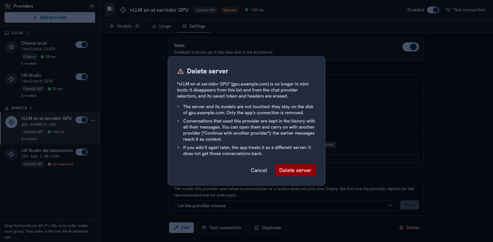
The confirmation spells out the consequences, including what happens to the chats.
Several providers, local, remote and cloud
Nothing limits you to one. A typical setup: the Ollama on your machine for quick tests, an LM Studio on the same machine, a vLLM or
another Ollama on the GPU server and, in the cloud, Anthropic and OpenRouter for the heavy lifting. Each one is its own row with its own status: one that is down (red dot, “no response”) doesn't get in the way of
the others, and selecting it shows the error with its reason and a Retry button. With no providers at all, the tab explains what a provider is and
lists the shortcuts to start from, cloud ones first.
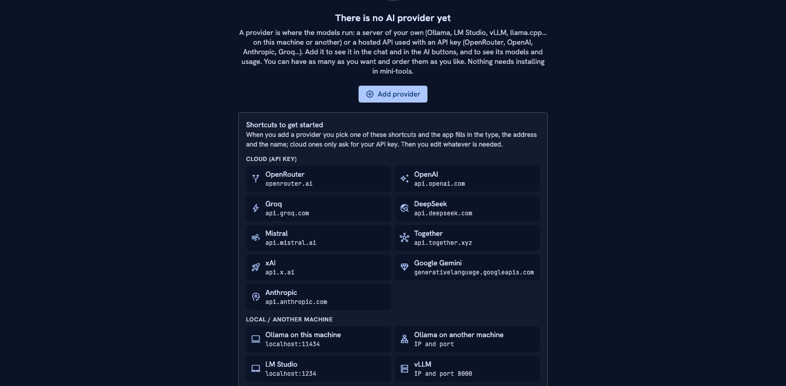
Without providers: what a provider is, and the shortcuts you will find in the add form.
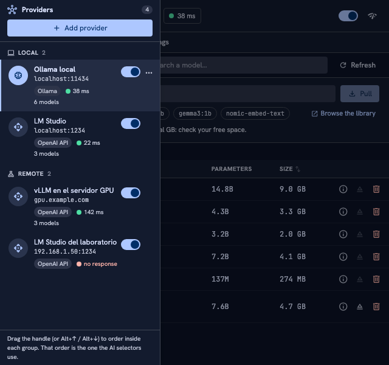
In a narrow tab the providers column opens as a drawer over the table.
Cloud providers and API keys
A cloud provider needs no server and no installation: you pick its shortcut and paste an API key. The add form groups the shortcuts as
Cloud (API key) —OpenRouter, OpenAI, Groq, DeepSeek, Mistral, Together, xAI, Google Gemini and Anthropic— and Local / another machine.
Click Add provider and pick the card, for example OpenRouter: it fills in the name, the type and the address.
Click Get an API key: it opens in your browser the provider's page where the key is generated (the app doesn't create it for you). Copy it.
Paste it in API key —it is required here— and click Test connection: it lists the models your key can use.
Optionally pick the default model from that list, and Save. The provider shows up in the chat's selector right away.
Where the key is stored
The API key is stored encrypted in the vault, under your master password, and it is sent only to that provider's address. After saving it is never shown again —not in the form,
not in Settings, not in the tab—: the screens only say Stored, encrypted in the vault. When you edit, leaving the field empty keeps the saved key; paste another one to replace it, and Remove API key deletes it.
Duplicate doesn't copy it.
For a cloud provider the form hides what doesn't apply —the context window, the self-signed certificate option and the guides for exposing a server— and warns that
whatever you send, including the code and tables you attach, goes out to the provider and is billed by use on its side.
Anthropic uses its own API (the Anthropic type) and comes with a recommended default model, claude-opus-5-5.
The other eight speak the OpenAI-compatible API. You can also reach any hosted service with the Other OpenAI-compatible card and its address by hand: if the address belongs to a known hosted provider, the form treats it as cloud and asks for the key.
A hosted API lists its models but doesn't pull or delete them: the Models section is read-only.
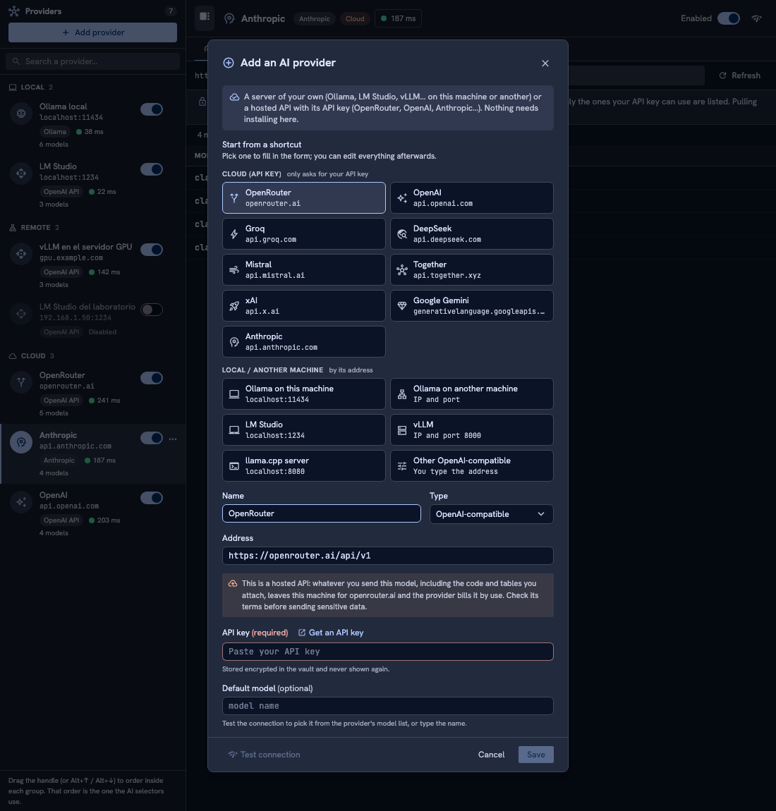
The add form with a cloud shortcut: the address is already filled in and the API key is required.
Enable, disable and order
Switch — every row has one, and so do the header and the Settings section. Disabled, a provider disappears from the AI selectors (the chat's and the AI buttons') but stays saved with its
configuration, its API key and its conversations; its row is dimmed and says Disabled. Turn it on and it comes back. It's the way to stop using a provider for a while without deleting it, or to keep a paid API from being picked by mistake. A disabled provider isn't probed either.
Order — drag a row by its handle (it appears at the left when you hover or focus the row) to move it inside its group. With the keyboard, Alt+↑ / Alt+↓ on the row, and a screen reader announces the new position.
The order is the one the AI selectors use, and it is remembered. While you search, ordering is off.
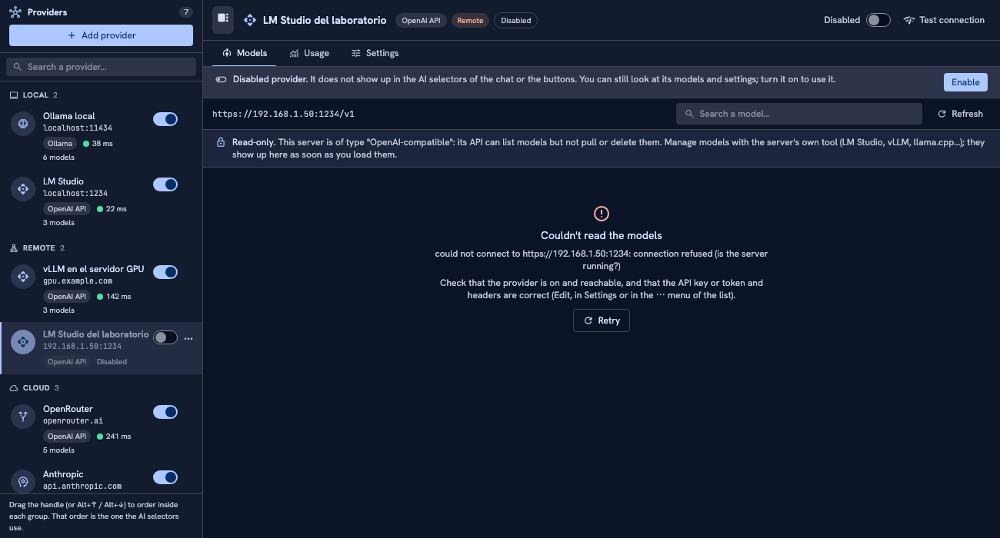
A disabled provider: dimmed row, switch off, and a note with an Enable button.
Models, Usage and Settings
The selected provider has three sections under its header:
Models — the list described below: pull and delete for Ollama, read-only for the rest.
Usage — tokens in and out, turns, conversations and speed of that provider according to the app's chat history, with the per-day chart and the split by model.
No cost is shown: no provider reports a price per token to the app, and computing one would be making it up. The real spend is in the provider's console.
Settings — an overview of how it is set up (type, group, address, whether an API key or token is stored —never its value—, headers, certificate, status) and its actions:
Edit, Test connection, Duplicate and Delete, plus the enabled switch and the default model.
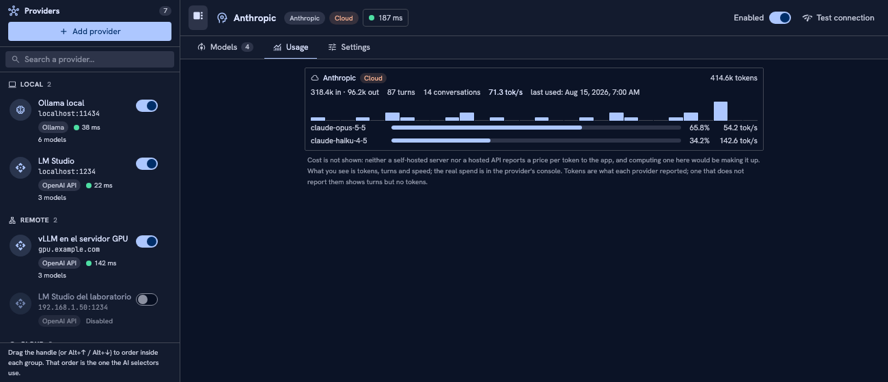
Usage of the selected provider only.
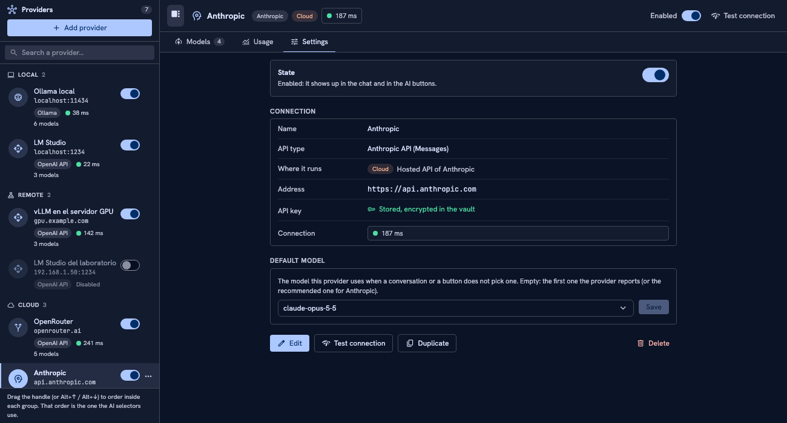
Settings: how it is set up, with the API key shown only as “stored”.
Default model
Each provider can have a default model: the one it uses when a conversation or an AI button doesn't pick one. Set it in the add/edit form or in the Settings section.
Once the connection has been tested (or the Models section has read the list) you pick it from the models the provider reported; with no list, or with a model that isn't in it, you type the name.
Empty means “let the provider choose”: the first one it reports, or the recommended one for Anthropic. The chat's model selector still lets you pick another one per conversation.
The list of models
For an Ollama server the table shows name, family, parameter size (7.6B), quantization (Q4_K_M),
size on disk, and when it was modified. Click a header to sort by name, size or date; a second click reverses the order. The search
box filters by any of those fields. In a narrow tab the less important columns fold away first.
A model that is loaded in memory carries an In memory badge with how much VRAM it takes and when the
server will unload it if nobody uses it. That list refreshes by itself every few seconds while the tab is in view.
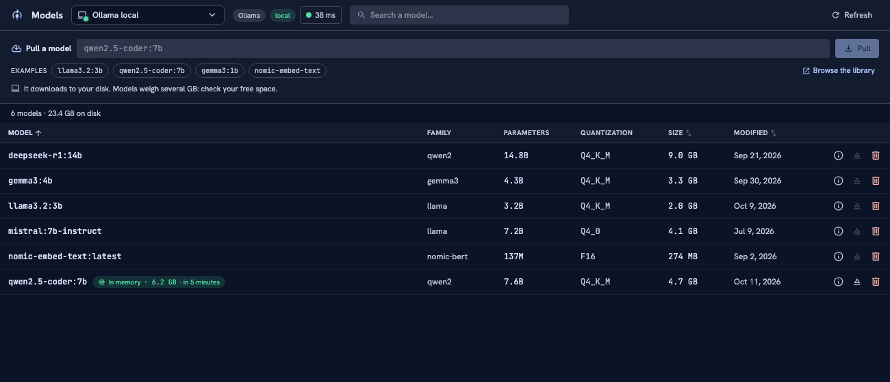
The models of a local Ollama. The green badge marks the one loaded in memory right now.
Pull a model
Type the name in the Pull a model field: name or name:tag, for example qwen2.5-coder:7b.
Paths such as hf.co/user/repo:Q4_K_M work too. The example chips fill the field with real names, and Browse the library opens Ollama's catalog in your browser.
Click Pull (or press Enter). A row appears under the form with a progress bar, the percentage, the status (“Fetching the manifest”, “Downloading”, “Verifying”) and the bytes downloaded out of the total.
Keep working: the download runs in the background, and you can start several at once. When it ends, the table refreshes and the model is available in the chat's model selector (the chat reads the list from the server when you pick it as provider).
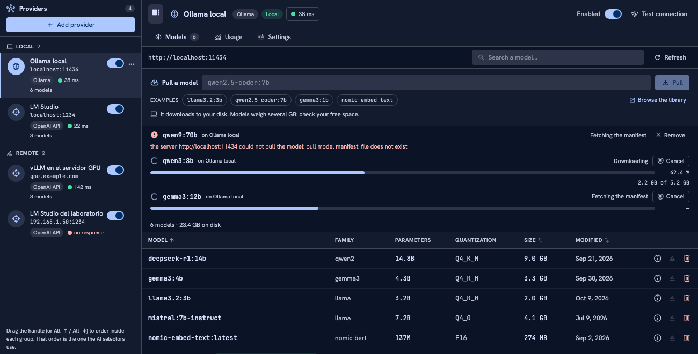
Downloads in progress: progress bar, bytes, and a Cancel button on each. A failed one keeps the server's error until you remove it.
Where it downloads
The model is downloaded to the disk of the machine where the server runs. With a remote server that is not your machine,
and the tab says so under the field. Models weigh several GB: check the free space there first.
Cancel stops the download but keeps what was already downloaded: asking for the same model
again resumes where it stopped. Closing the tab doesn't cancel anything either; when you come back the downloads are still listed.
A name that doesn't exist fails in a few seconds with the server's message.
Details of a model
The info button on a row opens a panel with what Ollama knows about it: family, parameters, quantization,
format, size, context window, digest (with a copy button), its capabilities (completion,
tools, vision…), the default parameters from its Modelfile, the prompt template and the
start of its license. Template and license are shown truncated when they are very long. In a wide tab the panel opens on
the right; in a narrow one it covers the list. Esc closes it.
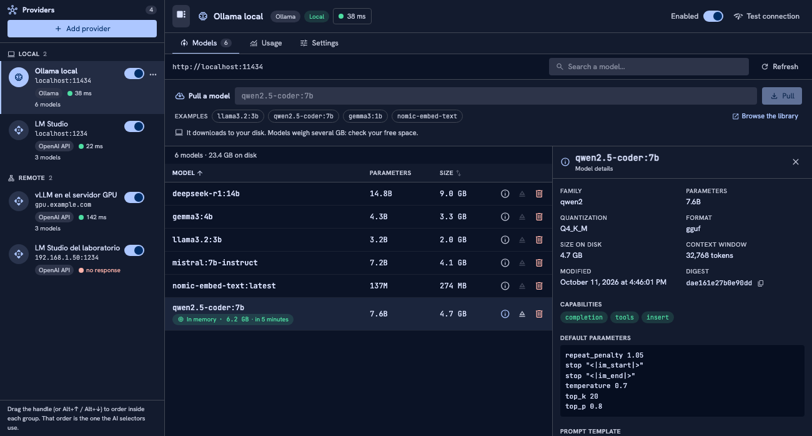
Details of a model: context window, capabilities, parameters and template.
Unload from memory and delete
Unload from memory (eject icon, only enabled for a loaded model) frees the RAM/VRAM it occupies without deleting it from disk. It loads again on its own the next time it's used.
Delete (trash icon) asks for confirmation and removes the model's files from the server's disk. The dialog names the server and, if it is remote, says it is another machine and nothing is deleted from yours. To use the model again it has to be pulled again.
Providers that aren't Ollama
An OpenAI-compatible server (LM Studio, vLLM, the llama.cpp server…), the Anthropic API and every other hosted API only know how to list their models:
they have no endpoint to pull or delete. The section shows the list in read-only mode, with a note, and hides the pull
field and the buttons instead of offering actions that would fail. Manage those models with the server's own tool, or in the provider's console.
An OpenAI-compatible server: read-only list.
Remote servers
A server on another machine is managed the same way —it is the same API—, with two differences you should keep in mind: pulling and deleting act on
that machine's disk, and if it doesn't answer the tab shows the error with the reason (refused connection, certificate, token) and a
Retry button. To reach a server across the network, see
Reaching a server on another machine.
Example: bring a coding model to the GPU machine
Open Utilities → AI providers and pick Ollama on the GPU server in the providers column.
In Models, click the qwen2.5-coder:7b chip and then Pull. Watch the bar reach 100%.
Open Utilities → AI Chat, pick that provider: the new model is in the model selector, ready to use. If a conversation was left without its provider, continue it with this one.
The chat, in every module
Claude Code, Codex CLI, OpenCode and Antigravity CLI, detected automatically on the PATH, plus any
model server you add. The same chat from the SQL editor, an SSH terminal, a note,
a repository or an HTTP request.
The chat knows what you're working on: switching tabs updates the context, it doesn't restart the thread.
Open the chat
⌘L / Ctrl+L opens it on whatever you're looking at. There's one conversation
per work context: a connection's thread survives you going to another tab and coming back, and doesn't
get mixed up with a repository's.
Leaving doesn't cut it off. If the agent is answering and you go to an SSH terminal, to a
repository or close the panel, that turn keeps running and the full answer is waiting for you when you come
back — along with whatever you had left typed in the message box.
Continue in the chat, with the context already attached
One-shot analyses —the terminal's Analyze error, an execution plan analysis, an HTTP
request's AI actions— have Continue in chat. The chat opens with what was analyzed
attached as chips: the exact terminal lines with the detected operating system, the request and
its response, and what the agent answered. That way you can ask follow-ups without explaining anything again.
Each chip expands so you can read exactly what will be sent, and is removed with the ×. They
travel with the next message, and whatever you'd already typed in the box isn't overwritten. On an HTTP request,
the AI menu also offers Ask in chat from scratch, with the request attached and the credentials
masked.
Names with spaces are referenced in quotes —@db:"Prod Facturación/CLIENTES"— and the
@ picker adds them for you.
The agent proposes; applying is your click
No AI action runs what it just wrote. They return text and you decide:
Module
What you can ask for
Databases
Write a query from natural language, explain and fix the engine's error, analyze an execution plan
HTTP
Explain the response, diagnose the failure, write the request, draft its documentation or its tests
Git
Draft the commit message from the staged diff and the repository's style
SSH and local terminal
Explain what's failing in the terminal output, with the server's operating system as context. A single-command block from the answer can be sent To terminal: it's typed in, without Enter
Notes
Query your knowledge base, and —with explicit permission— write down what it found out
Validate with another agent
In a repository chat, Validate with another opens a chat with a different agent to review what the first one did.
The reviewer gets two attached cards: What <agent> did (its last reply and the tools it used) and Uncommitted
changes (the changed files, including new untracked ones, and the staged plus unstaged diff). You can expand them to read them
and remove them with the ✕ before sending: nothing travels hidden. If the diff exceeds 48 KB it is cut and the card says so; with
no changes, only what the first agent did is attached. The prompt asks for a peer review: what's wrong, what's missing and what it
wouldn't do this way, with file and line references.
OpenCode
OpenCode is detected on the PATH or in ~/.opencode/bin, where its installer
leaves it. It signs in per provider with opencode auth login, and the model picker lists the models of the
providers you're signed in to, as provider/model. Two modes: Read-only uses its plan
agent, which doesn't write files; Apply edits uses its build agent, which edits the folder without
asking. In both it can't run shell commands: on its own it would run them without asking, and in the
chat there's nobody to ask. Its MCP servers (opencode.json, in the project and in
~/.config/opencode) are shown read-only, and it reads the project's AGENTS.md.
Its tool calls (shell, patch, list, todowrite, webfetch,
execute) show up as cards with their own icon and a one-line summary, like the other agents'.
mini-tools' tools with a CLI
With the MCP server on (AI access), the chat lets Claude Code and OpenCode use mini-tools' tools in any
mode: read your notes, a database schema, a repository's status and, if you enabled note writing, save to your
brain. They're named one by one for that turn; in non-interactive mode the CLI has no one to ask for permission and used
to reject them on its own. --dangerously-skip-permissions or a wildcard permission is never used, and no tool
writes to a database.
Read-only and Plan don't edit, even if your Claude Code settings allow editing or running commands: in
those modes the chat takes them away. Codex runs in its read-only sandbox.
If the CLI rejects a tool anyway, the answer ends with a note saying which one, why and what to do. With
Antigravity the card shows the real name of the mini-tools tool and the error detail, and a turn that ends without text
says so instead of staying empty.
Antigravity needs an approval rule per tool. In non-interactive mode it blocks every MCP tool that isn't
approved beforehand and the turn ends with no reply. Before each Antigravity turn (with the MCP server on) and when you
press Connect, mini-tools adds one mcp(mini-tools/<tool>) rule per tool to its
settings.json. When it adds or cleans up rules, the answer opens with a notice saying how many and in which file.
These rules are global, and you manage them from AI access. If
Antigravity rejects a tool anyway, the note includes a Repair permissions button; resending your message
is up to you.
Attach files
The Attach button, dragging onto the chat or ⌘V add images, PDFs and text or code files to your message,
with a warning when the model you picked can't read one. See Attachments.
Conversation history
The panel's History tab lists every conversation, grouped by module or by agent, with a
search box. Opening one resumes it in its own context —a conversation belongs to the resource
where it was born— and the messages are redrawn from what the app saved (or from the CLI's own transcript, for conversations that predate that). For a full-screen version with search
inside the messages, see AI Chat.
Usage per agent, read from what each CLI already records — not a made-up number.
How much you've spent
The Usage tab reads what each CLI already stores about its own sessions. It's their
estimate, not a parallel count by the app: making the number up would be worse than not showing it.
OpenCode is measured by asking its own CLI (opencode stats), so tokens, cache and the per-model
split are real numbers, and "this repo" is computed on the open repository. Reasoning tokens count as output, as in Claude Code,
so the totals are comparable. It has no plan of its own: the badge lists the providers you're signed in with (only their names
are read, never the credentials). It exposes no quota or balance, so Limits says so instead of showing 0%; the limit, if any,
lives in each provider's console.
Background chats and AI sessions
Run several AI conversations at once. They stay saved and listed —closing their tab, or the
app, does not remove them— until you close or delete them. Follow, stop, pin or resume every one from Utilities → AI Chat in the sidebar.
A conversation is not tied to the tab that shows it: it keeps working in the app while you do something else.
Closing the tab, going to another module or opening a second chat never stops a turn that is running:
closing a tab is not closing the chat. The way to stop a turn is the red Stop button, and the way to end a chat for good is Close chat
(see Closing the tab or closing the chat).
Utilities → AI Chat: what is working, what is waiting for you and what ended without you seeing it.
Conversations that stay until you close them
A conversation exists from the moment you create it, not from your first message. A new chat tab saves its conversation right away —with its provider, model, project and name, if you gave it one— and lists it under Utilities → AI Chat → Open as New chat · draft until you write to it (the first message names it, unless you had already named it yourself). It stays there until you close or delete it:
What you do
What happens to the conversation
Close its tab
Nothing: it stays open and listed
Quit the app and reopen it
It stays open and listed. Whatever was working is cut off and shows Interrupted when the app closed; nothing starts by itself when you reopen. Open it and keep writing: the saved messages are drawn again
Pin / Unpin
Moves it to the Pinned section at the top of the list, or back. It only changes the order
Close chat
It leaves Open (and is unpinned); the saved conversation stays in Recent. A draft that never had a message or a name is discarded
Delete
Erases the conversation and all its messages. It asks for confirmation and cannot be undone
The list of open conversations: pinned ones on top, and the states a restart leaves — a draft and an interrupted chat, both one click from resuming.The ⋯ menu (or right-click) of a row: open, pin, rename, close or delete.
The AI Chat tabs that were open when you quit are reopened on start, each with its conversations (and its split, if it had one), skipping the ones you closed or deleted in the meantime. Conversations saved before this version are not listed under Open until you open them once; they stay in Recent as always.
Several chats at once
New chat tab (⇧⌘N / Ctrl+Shift+N, or the New tab button in the chat header) opens another AI Chat tab, with its own project, provider and conversation. Each tab is named after its conversation (or the project, while it is empty).
Open in a new tab — in the history of an AI Chat, the arrow button on a conversation's row opens it in its own tab. A conversation is never shown twice: if it is already open somewhere, you are taken to that tab.
Split — the Split button (or Split: two chats side by side in the ▾ menu of New chat) shows two chats side by side in the same tab, each with its own project, provider and session. Closing the second pane does not stop what it was running.
The tab strip tells you how each chat is doing: a spinner while one of its conversations works, an amber dot if it waits for your approval, a green one if it finished and you haven't read it.
Where to open another chat tab
New chat (⌘N / Ctrl+N) starts a conversation in this tab; to have another one at the same time you need a new tab. There are three places, all with the same result:
Where
What to do
AI Chat header
The ▾ of New chat: New chat in this tab (⌘N), New chat in a new tab (⇧⌘N) and Split: two chats side by side (or Remove split). The New tab and Split buttons next to it show their label when the header has room and fall back to icons when it is narrow
Utilities
The AI Chat row has a + (and a ⋯ / right-click) with New chat in a new tab and New split chat (new tab). Double-clicking the name opens another chat tab. From the first open tab on, the row shows their count and lists them below, followed by the Open and Recent groups: one click takes you to each. A single click on the name takes you to the one that is already open (or opens the first one)
Tab strip
+ New ▾ → AI Chat. Clicking + New still opens a SQL query
The ▾ of “New chat” says in words how to have several chats at once.In Utilities, the open AI Chat tabs hang from the row; one click takes you to each.Two chats in one tab: one working, the other ready for a new question.
Closed tab, running turn
When you open a conversation that is still running —from Utilities → AI Chat → Open, from the history or from a notice— the chat
reattaches: it draws what the answer has said so far (text and tool calls), shows how long the turn has been going, and follows it live.
If the start of the turn is no longer available because the answer was very long, a note says start trimmed.
Reattached: what was said while the tab was closed is already there, and the answer keeps arriving.
A turn that ends while you are looking at that conversation is marked as read by itself. One that ends while you are elsewhere stays Finished — unread until you open it.
Closing the tab or closing the chat
They are two different things, and the app never mixes them up:
Action
What happens
Close the tab (the ×, middle-click, or Close tab (the chat keeps running in the background) in the right-click menu)
Only the tab goes away, with no confirmation. The chat stays open in the background: it keeps working if it was in a turn, and it stays listed under Utilities → AI Chat → Open —also after it finishes, and after you quit the app— until you close it. If something was still working, a notice says so and offers View (opens that list and highlights the conversation) and Stop
Stop (red button in the chat, or Stop in Open)
Cuts the current turn and keeps the chat open: you can write to it again. What the agent already wrote stays
Close chat (the Close chat button in the chat, the × or ⋯ / right-click on its row in Open, or Close and stop the chat in the tab's right-click menu)
Stops whatever is running, takes the conversation out of Open and frees its memory. It asks for confirmation only if it is working. The saved conversation stays in the history (Recent) and can be opened again; an empty draft is discarded
Delete (Delete in the ⋯ menu of a row, or in the right-click of a Recent one)
Erases the conversation and its saved messages, and stops it if it is working. Always asks for confirmation; it cannot be undone
Right-click on an AI Chat tab: close only the tab, or close and stop the chat.Closing the tab of a chat that is working does not ask anything: the notice says where to find it.Chats whose tab was closed stay under Open marked “in the background”; only Close chat or Delete removes them.
Tip
If you close a tab by mistake, nothing is lost: the conversation is still under Utilities → AI Chat → Open (or in Recent); one click on Open brings it back to a tab.
Closing the second pane of a split tab works the same way: its chat stays in the background.
Only AI conversations
This is how AI conversations behave. Every other tab (queries, terminals, HTTP requests, Docker…) keeps its usual behavior: closing it stops what it was doing.
Open and Recent, under AI Chat
There is no separate module for the AI: everything hangs from the AI Chat row in Utilities. Expand it and, after the open chat tabs, you get two collapsible groups (Recent starts collapsed). A badge over the Utilities icon, and another on the row, counts the conversations that are working or waiting for you (amber if any needs approval). The + of the row opens an empty chat tab.
Open — one entry per open conversation, the pinned ones first (under Pinned). Each row shows its status —Working, Needs approval, Finished — unread, Finished, Failed, Stopped, Interrupted when the app closed or Draft—, title, provider, model, project, when it last did something, how long it has been running and the last thing it said. The live state wins over the saved one. Each row has a ⋯ menu (also on right-click) and an × on hover that is Close chat.
Open (the button) — goes to the tab that has the conversation (or opens one) and resumes it: a running turn reattaches, an interrupted one is drawn from what was saved.
Pin / Unpin — moves it to the Pinned section at the top, or back. Pinning only changes the order.
Rename… — in the ⋯ menu (and on Recent rows, with right-click): changes the name of the conversation; it updates in the tabs, the history and these lists. See Name your conversations.
Stop — cuts the turn after a confirmation and keeps the chat open. What the agent already wrote stays; file changes are not undone on their own.
Close chat — stops it (confirming if it is working) and removes it from the list; the conversation stays in Recent.
Delete — erases the conversation and its messages, after a confirmation.
Approve… — appears when it waits for a permission and opens that request.
Mark as read — clears the unread mark of a finished conversation. It stays listed until you close it.
Recent — the last 20 conversations of any module and provider that are not open; one click opens it in an AI Chat tab and adds it to Open.
The View button of the background notice, from any module, takes you to Utilities → AI Chat → Open and highlights that conversation for a moment. The search box at the top of the sidebar also filters these lists by title, provider and project.
Permissions from other conversations
An agent can ask permission to run a command or edit a file while its chat is not in front of you. Those requests are no longer lost:
If it comes from the conversation you are looking at, the usual dialog opens right away.
If it comes from another conversation, a card shows up in the top-right corner with Review and Open. A dialog that pops up while you type something else would be answered without reading, and this is an authorization. Review opens the same dialog, naming the conversation that asks and with an Open conversation button to see the context first.
Several requests at once are queued: the dialog tells you how many more are waiting.
Closing the dialog denies, and so does the 5-minute timeout: silence is never a yes.
A permission from a conversation that is not in view: it says whose it is before you decide.
Notices
When a conversation you are not looking at finishes or fails, a notice appears in the top-right corner with its title and the last thing it said, and an Open button. It closes by itself after a few seconds; permission cards stay until you answer.
You can be in a query and still know that an answer is ready.
Example: two tasks in parallel
In AI Chat, pick a project, ask for the first task and press Enter.
Press ⇧⌘N / Ctrl+Shift+N: a new AI Chat tab opens. Pick another project (or provider) and ask for the second one.
Go back to your queries. The Utilities icon shows how many are working, and a notice tells you when one finishes.
Open Utilities → AI Chat → Open, click Open on the finished one and read the answer; Mark as read clears it. Pin the one you will come back to.
Quitting the app
Turns live while the app is open. If you quit it, the ones still running are cut off and the ones that were waiting for permission are denied — but the conversations stay: they are still under Open, marked Interrupted when the app closed, and nothing starts by itself when you reopen. Open one to resume it from what was saved (changes the agent had already made to files are not undone).
Attachments: images, PDFs and files
Send the agent a screenshot, a PDF report or a source file along with your question —in the
AI Chat, the side panel and the Git, database and SSH chats— and know before
sending whether the model you picked can read it.
Each file is a chip above the box: thumbnail for images, icon for PDFs and text, name, size and an ×.
Three ways to attach
The Attach button (the paperclip, next to the model selector) opens your system's file picker. Pick several at once.
Drag them onto the chat. While you drag, a dashed overlay says Drop the files to attach them; press Esc and nothing is attached.
Paste with ⌘V / Ctrl+V: a screenshot from the clipboard, or files you copied in Finder or Explorer. It works with the cursor anywhere in the chat, not only in the text box.
A message can be only files: with no text, the agent is asked to review what you attached.
Everything is keyboard-reachable: the button, every chip (Delete on a focused chip removes it) and the drop zone is announced to screen readers.
While you drag a file over the chat, the overlay says where to drop it and what the limits are.
What the chips tell you
Each chip shows its state, and a message that can't go out says why next to the box, not only in a tooltip:
Chip
Meaning
Can you send?
Spinner over the thumbnail
Uploading to the app's attachments folder
Wait a moment: Send is off while anything uploads
Neutral, with its size
Ready; the model you picked reads it
Yes
Amber — May not read it
The provider doesn't say what its model supports. The message goes out anyway and the provider answers
Yes
Red — No vision / PDF not supported
The model can't read it. The tooltip explains why and what to do (pick a model with vision, only Anthropic or Claude Code read PDFs)
No, until you remove it or switch model
Red — Could not attach
Too big, an unsupported type, or the app rejected it; the reason is written under the chips
It isn't sent; the rest is
Chips are re-evaluated when you change the agent or the model: switching to a model with vision
clears a red chip right away, no need to attach again.
With an OpenAI-compatible server: the image is a maybe (amber) and the PDF can't be read (red, Send off).
What each provider reads
Provider
Images
PDF
Text and code
Ollama
Models with vision (the server reports it)
No
Yes
Anthropic (API)
Per model
Yes, per model
Yes
OpenAI-compatible: OpenRouter
Per model (it reports it)
No
Yes
OpenAI-compatible: any other
Assumed, unconfirmed
No
Yes
Claude Code
Yes
Yes
Yes
Codex CLI
Yes
No
Yes
OpenCode
Yes
No
Yes
Antigravity CLI
Assumed, not verified
No
Yes
Text and code are read by everyone: their contents are pasted into the message inside a block with
the file's language, even for the CLIs. PDFs aren't converted to text: whoever can't read them
can't receive them, and the chip tells you before you hit Send. The type is decided by the file's
content, not its extension.
Limits
What
Limit
Image (PNG, JPG, GIF, WebP)
20 MB each (the model gets a reduced copy)
PDF
24 MB each
Text or code (UTF-8)
512 KB each
Files per message
10
They're checked before uploading, with a message naming the file, and again when sending. Binaries
the app doesn't know (an .exe, a zip), BMP or ICO images, and text that isn't UTF-8 are rejected.
Big images are reduced for the model, not rejected. A phone photo (6–15 MB, 4000 px) is accepted up
to 20 MB. What the model receives —servers and CLIs alike— is a copy of at most 2048 px per side and under 5 MB
(the limit of the Anthropic API): a PNG if the image has transparency and fits, otherwise a JPEG over white, lowering the
quality and then the size as needed. An image that already fits is sent as it is, without recompressing. Your
original stays untouched; the copy is a separate file in the app's attachments folder, never in your
repository, and is deleted with the rest after 24 hours. Two limits: an image of more than 50 megapixels
is rejected, and a WebP over 5 MB can't be reduced (convert it to PNG or JPG first).
What's stored, and what the model sees later
Sent messages keep their chips; in a resumed chat they show an icon instead of the thumbnail.
The history keeps only the name, type and size of each file, encrypted like the rest of the message. Never the content or the path.
Images and PDFs aren't re-sent in later turns. The model sees them in the message where you attached them; in the following ones it only receives their name, because resending megabytes on every turn would cost tokens each time and the file is deleted after 24 hours. The chip's tooltip says so. If you need it to look again, attach it again.
Pasted text stays in the context: it's part of what you said.
Privacy
The app only reads files from its own attachments folder
(inside its data directory, never inside your repository): the ones it saved when you attached them. It never reads an
arbitrary path of your machine, and they're deleted after 24 hours. What leaves your computer is what you attach to the
provider you picked: with a remote server or a cloud API, that includes the file.
Example: ask about a screenshot and a report
Open the chat with a provider that sees images and PDFs (Claude Code, or an Anthropic provider).
Drag the screenshot of the error and the PDF onto the chat; both appear as chips.
Type Why does the login fail? The report is attached too and press Enter.
Later you attach the .go file and send it with no text: the agent reviews it, already knowing the earlier conversation.
AI providers: your own servers and cloud APIs
Use a model that runs on your machine, on your network or in the cloud instead of a CLI. Add it once and it
appears as one more agent in the chat and in every AI button.
Settings → AI → AI providers: a summary, with the way to the full management in Utilities and the add button.
Pick a shortcut at the top of the form —a cloud one such as OpenRouter or Anthropic, or Ollama on this machine, LM Studio…— and it fills in name, type and address. Or fill them in yourself:
Pick the type: Ollama for Ollama's own API, OpenAI-compatible for LM Studio, vLLM, the llama.cpp server, OpenRouter, OpenAI and anything else that speaks /v1/chat/completions, or Anthropic for Anthropic's API.
Type the address: http://localhost:11434 for the local Ollama, http://localhost:1234/v1 for LM Studio, or the URL of a remote machine such as https://gpu.mycompany.com/v1. A cloud shortcut already brings it.
For a hosted API, paste the API key (it is required there). Click Test connection: it shows the server version and how many models it lists, or the exact error. Then Save.
One click for Ollama
When there is an Ollama answering on localhost:11434, Settings offers Local Ollama detected — Add
and saves it for you. The suggestion goes away once you add it or dismiss it.
Several providers
You can have as many as you want, local, remote and cloud. Utilities → AI providers lists them all in one
column, in three groups, with their status, and lets you enable, order, edit, test, duplicate and delete each one from there; Settings → AI shows a summary and links to it.
Shortcuts: start from a provider
When you add a provider, the top of the form offers the shortcuts in two groups: Cloud (API key) and Local / another machine. Picking one fills in name, type and address; you can still edit everything afterwards.
The form remembers nothing between openings: each time it starts with no card picked.
Card
Type
Address
Ollama on this machine
Ollama
http://localhost:11434
Ollama on another machine
Ollama
http://<IP>:<port> — asks for the IP or name and the port (11434 by default) and opens the guide to expose it
LM Studio
OpenAI-compatible
http://localhost:1234/v1
vLLM
OpenAI-compatible
http://<IP>:<port>/v1 — IP or name and port (8000 by default)
llama.cpp server
OpenAI-compatible
http://localhost:8080/v1
Other OpenAI-compatible
OpenAI-compatible
empty: you type it
OpenRouter
OpenAI-compatible
https://openrouter.ai/api/v1 — API key
OpenAI
OpenAI-compatible
https://api.openai.com/v1 — API key
Groq
OpenAI-compatible
https://api.groq.com/openai/v1 — API key
DeepSeek
OpenAI-compatible
https://api.deepseek.com/v1 — API key
Mistral
OpenAI-compatible
https://api.mistral.ai/v1 — API key
Together
OpenAI-compatible
https://api.together.xyz/v1 — API key
xAI
OpenAI-compatible
https://api.x.ai/v1 — API key
Google Gemini
OpenAI-compatible
https://generativelanguage.googleapis.com/v1beta/openai — API key
Anthropic
Anthropic
https://api.anthropic.com — API key; default model claude-opus-5-5
The port is yours to change. The two cards that ask for an IP take the port in its own field (1–65535); the address is built as http://IP:port.
The IP or name is just that: no http://, no slashes and no port. The form flags it in red if it isn't.
The Address field stays visible and follows the IP and port while it keeps that shape. If you edit it into something else, the card lets go and the form is just yours.
The name is filled in for you (Ollama · 192.168.1.50) until you type your own.
The shortcut cards at the top of the add form.
Hosted APIs (cloud)
A hosted API —OpenRouter, OpenAI, Groq, DeepSeek, Mistral, Together, xAI, Google Gemini, Anthropic— works like any other provider, with two differences: you
need an API key from the provider (the form has a Get an API key link to the page where it is generated), and what you send travels to the provider and is billed by use on its side.
The key is stored encrypted in the vault and never shown again. The full walkthrough —steps, where the key lives, default model, enabling and ordering— is in
Utilities → AI providers.
How to expose Ollama on the other machine
With the Ollama on another machine card the form shows this guide already open; with any other Ollama whose address isn't local it appears folded, one click away.
Every command has a copy button and uses the port you typed. The steps are done on the other machine:
Check how it listens.lsof -i :11434. If it shows localhost:11434, Ollama only accepts local connections; it has to show *:11434.
Make it listen on the network, depending on how it runs there:
macOS (Ollama app):launchctl setenv OLLAMA_HOST "0.0.0.0:11434", then quit Ollama from the menu bar icon and open it again. It doesn't survive a reboot.
Terminal:OLLAMA_HOST=0.0.0.0:11434 ollama serve
Linux (systemd):sudo systemctl edit ollama.service, add [Service] and Environment="OLLAMA_HOST=0.0.0.0:11434", then sudo systemctl daemon-reload && sudo systemctl restart ollama.
Windows:setx OLLAMA_HOST "0.0.0.0:11434", then quit Ollama from the tray icon and open it again.
Find its IP:ipconfig getifaddr en0 on macOS, hostname -I on Linux, ipconfig on Windows (look for the IPv4 Address).
Firewall: allow incoming connections for Ollama or for that port.
Verify from this machine:curl http://<IP>:11434/api/version must return the version as JSON.
“Ollama on another machine” with port 11435: the guide's commands already carry that port.
From the chat, nothing to install
Ollama is not installed like a CLI: it is used through its address, whether it runs on your machine or another one of your network. That is why the provider
selector of the AI Chat (and the side panel's) ends with Add AI provider…: it opens the same form
as Settings in a dialog and, on save, leaves the new server picked. If there is no server yet, the empty chat suggests it with a button
(“Is Ollama on another machine? Add it as a server”), and in Settings → AI the Coding agents list points you to this section.
Adding from the chat. If the test fails, the button changes to Save anyway.
An Ollama on another machine does not answer
If Test connection fails with connection refused or timed out against a non-local address, the form shows advice with a See the guide button. The usual cause:
Ollama listens by default only on its own machine's localhost, so from another one the connection is refused even though it is running.
The button opens the guide to expose Ollama inside the form and scrolls to it: diagnosis, commands per system, IP, firewall and verification.
You can save anyway
Saving never requires the test to pass: if the server is off or you have not opened it to the network yet, the button says Save anyway and you register it to test later from the list.
The token
It's optional, for servers behind a proxy or that require an API key. It's stored encrypted under your
master password and sent as Authorization: Bearer. It never comes back to the screen: when
you edit a server, an empty token field means keep the current one; to delete it, use
Remove token.
Context window
An Ollama server loads each model with a small context window (2k to 4k tokens) and, when the prompt doesn't fit, silently drops the beginning:
with a project's instructions and skills (up to ~32,000 characters) plus the history, your own message can get pushed out, and the model answers something else with no error.
That's why the server form has a Context window field with quick picks from 4k to 64k tokens and Server default (ask for nothing). A new Ollama server starts at 16,384;
the app sends it as num_ctx with every conversation.
More context costs memory. The model takes more RAM or VRAM when it loads and answers more slowly: raise it only if you need it. The model's own limit is shown in the details panel of Utilities → AI providers.
The chat warns you. If the prompt (estimated at about 4 characters per token) doesn't fit in the configured window, a line in italics appears once per conversation suggesting to raise it. It doesn't block or cut anything.
OpenAI-compatible servers don't have the field. LM Studio, vLLM and llama.cpp set the window when the model is loaded, and their API doesn't let you ask for it per conversation: change it in the server itself.
Servers you already had stay on Server default.
A new Ollama server starts with a 16,384-token context window.
Where it shows up
Each server is an agent more, with the name you gave it. You can pick it in the chat's agent selector, as the
provider of the AI buttons (write or fix SQL, analyze a plan, explain an HTTP response, draft a commit, explain
an SSH error) and in the picker that asks the same question to another model. In the chat you choose the
model from the ones the server lists; if you don't pick one, the first it returns is used.
What a server doesn't have
It isn't a program: there's no command to open
in a terminal, no API key per environment variable and no plan-limit bars (its usage is shown, just not a limit). Whatever it can do besides answering
—read and edit files, run commands, use your notes— is done by tools that this app runs for it: see below.
Tools
A server is not limited to chatting. With the MCP server on, it can use its tools (search and
read your notes, a table's schema, SSH logs). And with a working repository, it can read and search files and, if you
allow it, edit them and run commands: that is the local code agent, governed by the same
permission modes as the rest of the chat. It can even write notes by itself if you turn on the
brain. A model that doesn't support tools keeps working as plain chat, and the chat tells you so.
Usage
The usage panel (the chart button in the chat's header) has an AI providers section below the
CLIs: one card per provider with its local, remote or cloud badge, the tokens in and out, the turns, the conversations,
one row per model with its share, a bar per day of the window (hover a bar for that day's tokens and turns),
the average speed in tokens per second and when it was last used. A server you deleted still shows up, as Deleted server,
while it has conversations inside the window.
Unlike a CLI, a server leaves nothing on disk: these numbers come from this app's chat history, which saves each
turn's tokens together with the model that answered and how long the server took to generate. Turns saved before that
version have no model (they show as model not recorded) and no speed. The speed leaves out waiting for approvals and the
time tools take. A server that doesn't report token counts shows turns but no tokens.
No cost
A self-hosted or OpenAI-compatible server does not report a price per token,
so the panel shows no money amount: it would be made up. Only tokens, turns and speed.
Local or remote
Remote servers
What you send to a model —the question, and any schema, file or note you attach with @— travels to
the machine that runs it. With a server on another machine, that content leaves yours: use https if it
crosses a network you don't control. The form warns you when the address isn't local, and remote servers carry a
remote badge in the list. If the agent also uses file or command tools, what it reads from your repository travels too:
the chat warns you the first time (see With a remote server).
Reaching a server on another machine
Ollama listens only on localhost by default, so another machine can't reach it until you open it up.
There are two ways, and the second is the one to prefer:
Listen on the network (the commands per system, with copy buttons, are in the form's guide). On the machine that runs Ollama, start it with OLLAMA_HOST=0.0.0.0
and allow the port (11434) in its firewall. On Linux with systemd, run systemctl edit ollama and add
Environment="OLLAMA_HOST=0.0.0.0" under [Service]; on macOS, launchctl setenv OLLAMA_HOST "0.0.0.0" and restart Ollama.
The traffic is plain http with no authentication: do it only on a network you trust.
Put a reverse proxy with HTTPS in front (Caddy, nginx, Traefik…) and leave Ollama on localhost.
The proxy terminates TLS and asks for a token (or sits behind an access proxy such as Cloudflare Access: see
Additional headers). The address you type here is then https://ollama.mycompany.com.
OLLAMA_HOST=0.0.0.0:11434 ollama serve
LM Studio, vLLM and the llama.cpp server have their own equivalent (a host or --host option): bind to 0.0.0.0 or, better, keep them local behind the proxy.
Additional headers
Some proxies ask for their own credential on every request. The form's Additional headers editor takes
as many name / value rows as you need; they're sent with every request to that server, on top of the token.
The typical case is Cloudflare Access: create a service token there and add
CF-Access-Client-Id and CF-Access-Client-Secret with the values it gives you.
The form with two headers (values hidden) and the self-signed certificate switch turned on.
The values are sensitive: they are hidden while you type, stored encrypted under your master
password and never come back to the screen. When you edit a server that already has headers you only see their
names, and Replace headers throws the stored ones away and opens a blank editor — you type the whole new list
(an empty list deletes them). If you don't touch them, saving keeps them as they are. Test connection uses what's in the
editor, or the stored headers if you haven't replaced them. In the list, a server with headers shows a headers: N badge.
Self-signed certificates
A private server behind https with a certificate you signed yourself fails the check with a certificate error.
The Accept self-signed certificate switch skips that verification for this server only.
Risk
With the check off, the app can't tell the real server from someone impersonating it. Anyone in the middle of the network can read the
token, the headers and everything you send. Turn it on only on a network you control — a certificate from a real authority
(Let's Encrypt, or your company's) or a reverse proxy that has one is always better. The switch only applies to https://
addresses and is disabled, with the reason, for http. A server saved this way carries a TLS unverified badge in the list.
Is it responding? The status dot
Wherever you pick a model server —the provider selector of the AI Chat, the agent selector of the side chat panel
and the picker that asks another model— its icon carries a status dot:
Dot
Meaning
Green
It answered. Hover for the latency and checked X s ago.
Red
It did not answer. Hover for the exact error (connection refused, certificate, 401…).
Grey
Checking, or not checked yet.
The app asks the server when you pick it and then every 60 seconds, only while that chat is in view; with the window hidden
or out of focus it stops asking, and a CLI is never checked. Settings → AI → AI providers shows each provider's state when it opens, and
Test there updates the dot everywhere.
Server down: a red badge in the header and a banner above the message box with the error and Retry.
When the server is red, a banner above the message box shows the error and a Retry button that asks again right away.
It doesn't stop you from typing, but sending fails immediately with a clear error —shown as an error of the app, not as something the model
said— instead of leaving you waiting. Before every send the app checks the server, and if the connection drops before the first word arrives it retries once.
Manage a server's models
To see which models a server has, pull new ones or delete the ones you don't use, open Utilities → AI providers: it works with
these same servers, local or remote. See AI providers. The model selector of an open chat refreshes by itself when you pull or delete a model there.
Delete a server
The trash icon asks for confirmation, removes the provider from the list and deletes its stored token or API key. The
server itself isn't touched, and conversations you already had stay in the history: you can open them and continue them with another provider.
Local code agent: files and commands
A model server can read and edit files and run commands in your project (a repository or a folder),
with the permissions you choose. The model may be on another machine; the tools always run on yours.
Every action of the agent is a card: the tool, what it acted on and, for writes, how many lines.
What it can do
Tool
What it does
Kind
read_file
Reads a file (a line range, if it asks)
read
list_dir
Lists a folder
read
search
Searches text or a regex across the tree, respecting .gitignore
read
glob
Finds files by name pattern (for example **/*.go)
read
skill
Loads the full instructions of one of the project's skills
read
read_skill_file
Reads a file that ships with a skill (template, script)
read
write_file
Creates or replaces a file
write
edit_file
Replaces one exact, unique fragment
write
run_command
Runs a command in the working project, with a time limit and trimmed output
command
On top of these it can use the MCP server tools (your notes, schemas, SSH logs…) when that server is on.
The working project
The tools act on one project: the repository open in the chat of a Git tab, or the repository or folder you choose in the
Project selector of the AI Chat. Paths are confined to it (symlinks are resolved,
and a path that escapes is rejected) and .git/ is never written.
No repository: the chat says it plainly — only the MCP tools are available.
Permission modes
They are the same modes of the chat's selector, in the same order, from least to most permissive.
A tool the mode doesn't allow isn't even offered to the model: one that is listed and always fails only invites trying it.
Mode
Read
Write
Commands
Read-only
yes
not offered
not offered
Plan
yes
not offered
not offered
Approve each action
yes
asks every time
asks every time
Apply edits
yes
without asking
asks every time
Automatic
yes
without asking
without asking, except risky ones
Apply edits and Automatic need your explicit confirmation before they become active, and while one is
active the chat shows a warning in every turn. Without a working project only Read-only and Plan are offered:
there would be nothing to touch.
Risky commands always ask
Some commands ask in every mode, even in Automatic: recursive deletes (rm -rf),
git push (and above all --force), git reset --hard, git clean -f,
sudo, formatting or partitioning a disk, dd, redirections to devices, curl … | sh and similar.
The dialog shows the full command, the reason it counts as risky and a red Allow anyway button;
the focus starts on Deny, so a distracted Enter doesn't authorize it.
A risky command: the reason in red, the command in full and the safe option focused.
A command is not confined
File paths stay inside the repository, but a command runs with your permissions and can touch things outside it.
That's why commands ask in every mode except Automatic, and why it is a mode you pick on purpose.
If you don't answer, the question expires after 5 minutes and is denied; stopping the turn closes the dialog as well.
With a remote server
What the agent reads —file contents, command output— goes to the model, so with a server on another machine it
leaves yours. The first time you use a mode with tools (or any mode, with a repository selected) against a remote
server, the chat shows a notice above the message box and records it in the conversation. Remote servers carry a
remote badge in the chat header and in Settings.
The warning shows up before the first message, once per conversation.
What it leaves behind
What the agent writes lands in the repository's working tree: you see it in the Git module's diff and
discard it from there, exactly as with the CLIs. Nothing is committed on its own.
If the model doesn't support tools
Some models reject them. The turn carries on without tools and the chat shows a notice at the top of the answer, once per session and model.
Example: have it fix a failing test
Open Utilities → AI Chat, pick your model server and, in Project, your repository or folder.
Choose Approve each action in the mode selector.
Type TestCursorPage fails in CI, find out why and fix it. For every write or command, a dialog asks first.
When it finishes, review the diff in the Git module and discard whatever you don't want.
Projects, folders and automatic context
Give a model server a project —a git repository or any folder— and it works like a code assistant:
it reads the project's instructions and skills by itself, and in Automatic mode it edits and creates files and runs commands without asking.
The Project selector: repositories, folders you opened, and the two actions at the end.
Pick a project
In the header of the AI Chat, the Project selector lists:
No project — a general conversation. With a model server it only has the MCP tools.
Your git repositories — the ones from the Git module. Conversations that already used a repository keep working.
Folders (with a folder icon) — any folder you've opened. A folder that no longer exists on disk shows greyed out and can't be picked; hovering it says why.
Open folder… and Manage folders…, at the end.
The CLIs (Claude Code, Codex, OpenCode, Antigravity) also run inside that folder. A conversation remembers its project: when you resume it from the history, its project is the one you see.
Folders: open and manage
Open folder… shows the system's folder picker. The app only remembers the path; it copies nothing. The filesystem root and your home folder
are rejected, with the reason: giving an agent access to everything is not what a project is for.
Manage folders… lists the folders you granted, with a button to remove each one. Removing a folder revokes the app's access to it and deletes or modifies nothing on disk, and you can open it again whenever you want.
It does, however, delete from the app's history the conversations held in that folder (same as removing a repository): the confirmation says how many. Git repositories aren't listed there; they're managed in the Git module.
Manage folders: removing one takes it off the app's list and asks for confirmation.
Automatic context: instruction files
With a project selected, a strip appears under the header: Context: AGENTS.md · CLAUDE.md · 6 skills. It is what the app reads by itself from the project, and it shows
nothing it didn't actually load. Click it to see the list: each file's path, whether it comes from the project or is global (your home folder),
its size, and a Truncated flag when it exceeded the limit and the model only gets its beginning. It refreshes when you change project and when you come back to the window, so you can edit AGENTS.md elsewhere and see it here.
Project — AGENTS.md, CLAUDE.md, CLAUDE.local.md, GEMINI.md, .github/copilot-instructions.md, .cursorrules and Cursor's always-apply rules. A file that imports others with @file.md brings them in; one that is a copy of another is only loaded once.
Global — ~/.claude/CLAUDE.md, ~/.config/opencode/AGENTS.md and ~/.codex/AGENTS.md, if they exist.
With a model server the instructions are loaded automatically and travel with every message, up to a total limit (what doesn't fit is reported, not cut silently).
With a CLI the app injects nothing: Claude Code, Codex and the like read their own files from the folder, and the strip only shows what they will find.
Large instructions? Check the context window
Instructions and skills travel in the system message of every conversation. With an Ollama server, if they are large (the limit is ~32,000 characters) and its
context window is the default 2k to 4k tokens, the server silently cuts the beginning and your message may not even arrive. Raise the
Context window of that server (a new one starts at 16,384): the chat warns you once if the estimated prompt doesn't fit.
The context popover: what is loaded, from where, and how much of it.
One set of rules for every agent
Each CLI reads only its own instructions file: Claude Code CLAUDE.md, Codex and OpenCode AGENTS.md,
Antigravity GEMINI.md. The Agents tab of the Git module lists the ones your repository is missing, and when at least one of
them exists, each missing file gets a Create button. It writes a short pointer to the existing file, not a copy, so the
rules live in one place: CLAUDE.md and GEMINI.md import the original (@file) and get its real content,
and AGENTS.md links to it, because Codex and OpenCode don't import. An existing file is never overwritten.
Skills and progressive loading
Skills are folders with a SKILL.md (in .claude/skills, .github/skills, .opencode/skills or .agents/skills, in the project or in your home folder).
They are loaded progressively: the model starts out seeing only each skill's name and description, and when one fits the task it calls the skill tool to read its full instructions —
and read_skill_file for a template or script that ships with it. That keeps a small model's context free until a skill is actually needed. If the project and your home folder
have a skill with the same name, the project's wins.
Besides skill and read_skill_file, the model also has glob to find files by pattern (for example **/*.go). All three are read-only and appear as cards in the conversation.
The agent used the project's skill, listed files with glob and wrote the report.
Automatic mode
With a project selected and a model server as the provider, the mode selector offers Automatic: the agent edits and creates files and runs commands without asking.
Risky commands —rm -rf, git push, sudo…— still ask, in every mode. The first time, a chat with a project shows a suggestion above the message box to switch to it;
it never switches by itself.
The suggestion on a new chat: it offers Automatic, it doesn't switch to it.
The first time you pick it in a project, the app asks you to confirm and explains the risk. After you accept, it doesn't ask again for that project.
The mode is remembered per project: a new chat on a project goes back to the last mode you chose there. A project you've never picked a mode for starts, as always, in Read-only. A conversation you resume from the history comes back with its mode; if it was Apply edits or Automatic, only when you had already accepted it on that project, and otherwise it comes back in Read-only.
While Automatic is on, the chat shows a warning in every turn.
Automatic mode on a folder: the warning stays visible in every turn.
A folder is not a repository
In a git repository, what the agent writes lands in the working tree and you can review and discard it from Changes. In a folder without git there is no history to go back to:
the strip says so, and the confirmation says so too. A command, moreover, runs with your permissions and can touch things outside the folder.
Example: write the weekly report from a folder
Open Utilities → AI Chat, pick your model server and, in Project, choose Open folder… and select the folder with your tickets.
Check the Context strip: your AGENTS.md and the report skill should be there.
Choose Automatic in the mode selector and accept the confirmation.
Type Write this week's report. The agent loads the skill, reads the files and writes the result in the folder.
Brain: notes the agent writes
If you allow it, the agent leaves what is worth keeping as notes of yours, sorted by project and topic,
like an Obsidian vault that fills itself.
The Save to my brain switch, on, and the notes the agent wrote with their Open note button.
How to turn it on
It needs three things, and the third is per conversation:
Turn the MCP server on in Settings → AI → AI access.
In the same card, allow letting the agent write in your knowledge base.
In the chat, turn on Save to my brain, next to the mode selector. It is off by default and remembered per conversation.
Without the MCP server or the write permission the switch is blocked; clicking it opens Settings → AI.
Once on, every turn of that conversation asks the agent to record what's worth keeping. It works with model servers
and with the CLIs that use the MCP server. If you later turn off the server or the permission, the switch stays on but
inactive (orange, with a padlock) and nothing is written.
Where it writes
Settings → AI → Brain: what's missing, the root folder and how it is organized.
Projects — when the conversation has context (a repository, a connection, an SSH server), in Proyectos/<project>.
Topics — when it doesn't, in Temas/<topic>.
Index — each project and topic has an _Índice note (a map of content, as in Obsidian) linking to its notes; the notes graph shows it as a navigable brain.
How — it searches first to extend a note instead of duplicating it, links with [[…]] and tags with #….
The folder and index names are fixed; only the root folder (Cerebro by default) changes, in Settings → AI → Brain. Changing it doesn't move existing notes.
It remembers on its own
With Save to my brain on, every message also carries the notes from your brain that resemble what you wrote: the ones in
the project's folder (its _Índice first) or, when the conversation has no project, those under Temas. They are found
by the words in your message, and the note matching the most words wins. At most five go in, trimmed. Notes you marked private never
go in. Above the agent's reply you see Recalled N notes: …; click a title to open the note. What was recalled isn't saved in the
history — only what you typed is. Example: asking "how do I resolve a row lock in the batch?" in a project that already has a
Row locks note brings that note in without you mentioning it.
The notes tools
The brain uses the MCP notes tools, improved so the agent can find its way (they also work for the CLIs):
vault_search_notes — optional folder and tag filters.
vault_read_note — also returns the folder, tags, outgoing links and backlinks.
vault_list_folders and vault_list_notes — the folder tree with counts, and the titles in a folder.
vault_create_note — optional folder as a path; it creates the missing folders.
vault_append_to_note — adds a section to the end of one of its own notes, without rewriting it.
The rules don't change
Private notes are out of reach, notes you wrote are never rewritten (and neither are the agent's own once you edit them),
writing only exists with the permission on, and everything goes into the access log. You can't delete anything this way.
Open what it wrote
In the chat, the cards for vault_create_note, vault_append_to_note and vault_update_note show the note's title and an
Open note button that takes you to it in a tab. Every note carries a mark saying an agent created it.
The @ system: you choose what crosses over
Type @ in the chat and reference something specific. Before sending, each chip
expands and shows exactly what will be injected.
What you can reference
Reference
Injects
Never
@db:Prod/clientes
Columns, types, primary and foreign keys
No rows, no DSN, no username
@file:backend/git/log.go
The file from the open repository
Nothing outside the repository
@git:staged
The staged diff
—
@explain:last
The last saved execution plan
The data the query returned
@note:"Runbook"
The note's Markdown
The content of a private note, under any circumstances
You see it before it's sent
Why
A reference that expands silently is indistinguishable from a
leak. Each chip shows its resolved content before the message goes out, so what reaches the model is
what you saw.
Embedded MCP server
The agent asks, instead of you sending it everything up front.
Turn it on, copy the configuration and the CLI can already ask.
What it exposes
Turn it on and any compatible CLI can ask the app for a table's schema, search your notes or read the last
lines of a terminal — over a local socket, not over the network.
Connecting your agent
Under How to connect your agent each CLI shows its state: Connected, Out of date
(it's configured, but points to a different mini-tools: a moved copy or a development build), Not connected or
Not installed. For Claude Code and Antigravity a Connect button appears (or Reconnect
if it's out of date): mini-tools registers the server for you, with nothing to copy. For Claude Code it uses the CLI's own command
(claude mcp add --scope user); for Antigravity it adds only the mini-tools entry to
~/.gemini/config/mcp_config.json, keeping everything else and leaving a backup copy. Restart the CLI afterwards so it
picks it up. Codex and OpenCode are connected by copying the snippet shown below: their configuration files have comments and
formats that mini-tools doesn't rewrite.
Antigravity permissions
In non-interactive mode —the app's chat— Antigravity blocks every MCP tool that isn't approved beforehand
and the turn ends with no reply. To avoid that, mini-tools adds one mcp(mini-tools/<tool>) rule per tool
of its catalog to permissions.allow in ~/.gemini/antigravity-cli/settings.json: before each
Antigravity turn (with the server on) and when you press Connect. It never uses a wildcard, only touches rules
of its own —your other rules and keys stay exactly as they are—, leaves a backup copy before each change and doesn't overwrite a
file that isn't valid JSON.
In Settings → AI access, the Permissions in Antigravity block shows how many tools are approved
(8 of 9 tools approved) and has two buttons: Remove (asks for confirmation and deletes only the
mini-tools rules) and Re-sync (adds back whatever is missing). Once you remove them, mini-tools no longer
adds them by itself until you press Re-sync (or Repair permissions in the chat).
Note
The rules are global: they apply to all of Antigravity, so
its interactive terminal won't ask you for confirmation before using mini-tools' tools either. Remove
undoes that.
Access control
Each tool has its own switch.
Creating notes is a separate switch from reading them: turning the server on shares read access, that one also allows writing.
Everything goes into an access log: what it asked for, when and what it was given.
Private notes are always out of reach, with no switch that changes it.
The notes tools —search with folder and tag filters, read with links and backlinks, list folders and notes, create in a folder
and append a section to a note of its own— are what the brain uses to write notes by itself.
Note
The server doesn't turn itself on at
startup. The app remembers whether you left it on, but that's a reminder for the interface, not an
automatic start.
Appearance and font size
Settings → Appearance. Three different sizes, because they're three different
things to read.
Language
The app speaks English and Spanish. Pick one in Settings → Appearance →
Language, or with the language button on the unlock screen, which is there precisely for
whoever can't read the language it started in. It switches instantly —no restart, no terminals closed, no
queries cut off— and it's remembered, on the unlock screen too.
The first launch is in English. So is the first launch after updating from an earlier
version: the language had never been chosen. You change it once.
Everything the app says is translated: menus, notices, error messages and what it asks the AI agents,
which reply in the chosen language. Your data isn't: connection names, notes and results
stay as you wrote them.
The ? button opens this help in the chosen language.
Interface font size
From 90 % to 150 % in five steps, and it enlarges everything: the sidebar, menus,
lists, dialogs, labels and icons, in every module. It applies immediately and is remembered between
sessions.
Step
What for
Compact · 90 %
Fits more information on screen
Normal · 100 %
The usual size
Large · 115 %
A bit more body, without changing the layout
Larger · 130 %
For reading without leaning into the screen
Maximum · 150 %
The largest before the bars stop fitting
It scales the text, not the spacing: it isn't a window zoom, so the layout holds and on small screens
the bars wrap into two rows instead of overflowing.
On the unlock screen too
The chosen size applies also to
the screen that asks for the master password. That's deliberate: if the setting only worked with the
vault open, someone who can't read the app couldn't read the form asking for the password to fix it either.
The code editor
It has its own font and its own size, plus line wrapping, line numbers and
tab width. It's chosen for reading code, not interface, so it doesn't follow the size above. The dialog's live
preview shows how each typeface looks — including system ones, which depend on this machine having them.
The terminals
The local and SSH terminals share the same size (they're the same widget: two different sizes for "the
terminal" wouldn't mean anything) and the same color theme.
Light and dark theme
The app's theme is switched with a button. The editor's and the terminal's follow it by default
("Automatic"), or can be pinned to a specific theme by hand.
Where these buttons are
At the bottom of the sidebar, next to the version: theme,
help and settings. With the sidebar hidden they're stacked in the icon
column, above the logo.
Why there
They used to live at the top right, in the SQL editor's
context bar — which disappears in a note, a terminal, an HTTP request or a repository. Two settings that apply
to the whole app can't depend on which tab you have open: to change the theme you had to open a query first. The
bottom of the sidebar is always there, in every module, and it was already where the version and the help
lived.
Updates
One check per session, a discreet notice, and the click downloads the file for your system.
How it works
On startup, the app asks GitHub once whether there's a release newer than the binary you're
running. If there is, a notice appears at the bottom of the sidebar and the click downloads the file for
your system directly —the .dmg on macOS, the .exe on Windows—, without having
to figure out which one it was among the release's attachments. The tooltip says which file it will download
before you press it.
If there's no network
It's never an error
If the check fails —no network, no permission,
a server that doesn't answer— nothing happens: no notice, no message, and the app starts just
as fast. A "new version available" is a luxury that must never interrupt or delay normal offline use of the
program.
Updating by hand
Download the new package from Releases and
replace the old one. The vault isn't touched: it lives in the application's data folder, not
inside the binary, and schema migrations run by themselves when it opens.
Test an endpoint someone sent you over chat, and keep it
From a pasted curl to a saved, documented, searchable request.
In the browser where it works, Copy as cURL.
In mini-tools: HTTP module → a collection's menu → Paste a cURL command…. You get a request with method, URL, headers and body. (If you already have a tab open: ✦ → Write the request…, paste and Import as is.)
Replace the host with {{baseUrl}} and define the variable in the development environment. The same request works against both environments.
Send it. If something fails, ✦ → Diagnose the failure: it goes with the client configuration in front of it, which is where half of transport errors are explained.
Save as example adds the response to the request's documentation. Then Documentation… → Publish as note and it's in your knowledge base, searchable and linkable.
A query you don't know how to write, against a schema you don't know
The agent sees the DDL of the relevant tables; never a row.
Open the editor on the connection and press ⌘I / Ctrl+I.
Ask for it in plain words: "August invoices with more than three complaints, with the customer's name".
The app sends it only the DDL of the relevant tables —columns, types, keys— and never a row.
Read the explanation on the side, apply it to the editor, and run with ⌘↵. If the engine returns an error, Fix sends it the error verbatim: an ORA-00942 carries more information inside than any paraphrase.
Document an incident while you fix it
So the note is usable by the next on-call person, not just readable.
Notes module → On-call folder → the folder's "+": the note is born inside it.
Paste the dashboard screenshot with ⌘V: it's stored encrypted inside the vault, just like the text.
Put the query you used in an sql connection="…" block. The next on-call person runs it from the note.
Link the runbook you followed with [[…]]. The graph and backlinks do the rest by themselves.
Recover the commit you deleted ten minutes ago
Without touching anything you have now.
Git tab → bottom panel → Reflog tab.
The reset shows up marked in red; the commit you had before is the one on the row below.
Create a branch here. It doesn't move anything you have now.
Switch to that branch whenever you want, or bring over just what you're missing with a cherry-pick.
Keyboard shortcuts
The ones that work across the whole app. Each module adds its own in its tooltips.
Shortcut
What it does
⌘↵ / Ctrl+↵
Run the query, or send the grid's pending changes
Ctrl+Shift+↵
Run the PL/SQL block under the cursor
⌘I / Ctrl+I
Query assistant: ask for a query or fix the one that failed
⌘L / Ctrl+L
Open the chat on whatever you're looking at
⌘N / Ctrl+N
In the AI Chat tab: start a new conversation
⇧⌘N / Ctrl+Shift+N
Open another AI Chat tab, with its own project, provider and conversation (background chats)
F2
In the AI Chat tab, its tab strip or its sidebar row: rename the conversation (name your conversations)
⌘S / Ctrl+S
Save the active tab (query, note, file, request)
⌘V
Paste an image into a note, or an image or file into the chat (attachments)
Ctrl+Space
Force autocomplete, even where it doesn't open on its own
⌥⌘L / Ctrl+Alt+L
Format the selection or the whole file
⌘+click / Ctrl+click
Open the DDL of the table or routine under the pointer
Tab
Accept the grey suggestion, or jump to a shortcut's next placeholder
F5
Refresh the active connection's catalog
Esc
Close whichever panel, menu or search box is open
Middle-click
Close the tab you're pointing at: workspace tabs, "Result N" tabs and files open in the Git editor
On this page
/ puts the cursor in the search box at
the top, and the arrows plus Enter open the result.
Security
What's encrypted, what never leaves the backend and what an agent sees.
Encryption and isolation
Per-column encryption
Every DSN, SSH password, private key and passphrase is encrypted with AES-256-GCM before being stored. The key is derived from your master password with Argon2id and is never persisted.
No bypass
Without the correct master password the app doesn't start — not even through the frontend's internal calls.
The DSN never leaves the backend
It never reaches the interface or the logs, not even in debug mode. "Export settings" redacts passwords and keys before writing the file.
Backups tied to the password
Creating and restoring ask for your master password, verified against the backup file itself — so one that ends up on a USB stick or in the cloud is useless without it.
Nothing is sent anywhere
There's no app server and no telemetry. What goes out to the internet is what you point it at.
The AI only sees what you show it
@ references expand before being sent, private notes are always excluded, and no secret from an HTTP request reaches the model.
Vault backups
Manual (with name and date) or automatic every N hours to the folder you choose, where the
scheduler always replaces the same file. Both ask for the master password, and restoring verifies it against the
file itself before touching anything.
Both are managed from Settings → Vault, and that's also where you see how the last manual
backup ended, with the full path of the file written — or the notice that you closed the system
dialog without choosing where to save it.
Where the vault lives
In your operating system's application data folder, not inside the binary. That's why replacing the
executable with a new version loses nothing, and why the backup is a file you can copy.
Terms and conditions
What you can do with mini-tools, what it does with your data and what remains your responsibility. In short: it's free, it's yours, and it's provided as it is.
License
mini-tools is free software under the MIT License (copyright 2026 rafael). You can use it, copy it, modify it, distribute it and use it at work or commercially, as long as you keep the copyright notice and the license text in the copies you distribute. The full text is the LICENSE file in the repository, and it is the one that prevails over this summary.
No warranty
The software is provided "as is", without warranty of any kind, express or implied —including fitness for a particular purpose or that it is free of errors—. The authors are not liable for any damage, data loss or downtime arising from its use. Official binaries are not signed, so macOS and Windows warn when opening them for the first time (see Install); the Windows build is cross-compiled and each version says in its release notes whether it was tried on a real Windows.
Your data and your privacy
It stays on your machine. Connections, passwords, keys and notes live in an encrypted vault in your operating system's application data folder. There is no account, no app server and no telemetry.
The master password can't be recovered. It isn't stored anywhere: if you lose it, the vault and its backups can't be opened. Keeping the password and the backups safe is up to you.
What does go out to the network is only what you ask for: connections to your databases, servers, APIs and Docker, one update check to GitHub on startup (it fails silently without a network), and whatever the AI CLIs you choose to use send to their own provider.
Screenshots in this help are generated with made-up data; they contain nobody's information.
Responsible use
mini-tools runs real operations: queries and statements against your databases, commands on remote servers, terminating processes, deleting containers, images and volumes, and purging logs. The confirmations and the production mark are help, not a safeguard; you decide, and you answer for, what runs and where. Use it only on systems you are authorized to access, and respect the policies of your organization and of the services you connect to.
Third-party tools
The AI agents (Claude Code, Codex CLI, OpenCode, Antigravity CLI), Docker, the database engines and the other programs mini-tools talks to belong to their own authors and are governed by their own terms and prices; mini-tools doesn't bundle or resell them. What you send to an AI agent is handled by its provider under its policies.
Changes
These terms can change from one version to the next, and this page describes the version shown in the top bar. Questions, reports and contributions go to the project's repository.
Frequently asked questions
Do I need an account or a license?
No. It's MIT, there's no sign-up and no app server.
Does it work offline?
Yes. Fonts and icons are bundled and there's no CDN. It only needs the network to reach your database, your server or your API — and for the AI CLIs, which talk to their provider.
What happens if I lose the master password?
The vault is lost. There's no recovery: the password isn't stored anywhere, which is what makes a stolen backup useless.
Do the agents see my credentials?
No. The DSN never leaves the backend, private notes are out of reach at the query level, and anything that goes into a prompt from the HTTP module carries unresolved placeholders and masked credential headers.
Do I have to install Claude Code or Codex?
Only if you want to use them. The app detects them if they're there, and nothing happens if they aren't.
Does it replace Postman or DataGrip?
For day-to-day support work, yes: it's what those tools do, in one window and without an account. For what's very specific to each (team-shared collections, SQL refactors), it doesn't try to be.
I updated and the app is in English — why?
Since 2.8.0 the app speaks English and Spanish, and English is the default until you pick another language. Switch to Spanish with the language button on the unlock screen or in Settings → Appearance → Language, once: it's remembered. See Language.
Can I use it on Linux?
It builds and runs, but it isn't packaged or tested there: there's no published artifact. Build it from source with wails build.
What about the screenshots in this help?
They don't come from a real installation: they're generated by mounting the components in a headless browser with made-up data (./scripts/uishot.sh). There are no paths, hosts or credentials of anyone — not because they were removed, but because they were never there.
mini-tools — MIT. Go + Wails v2 + React. Documentation for
v2.10.4; this page doesn't make a single external request.
Source ·
Downloads ·
Changelog ·
Terms